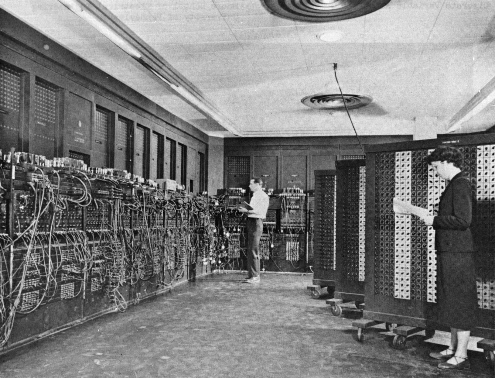
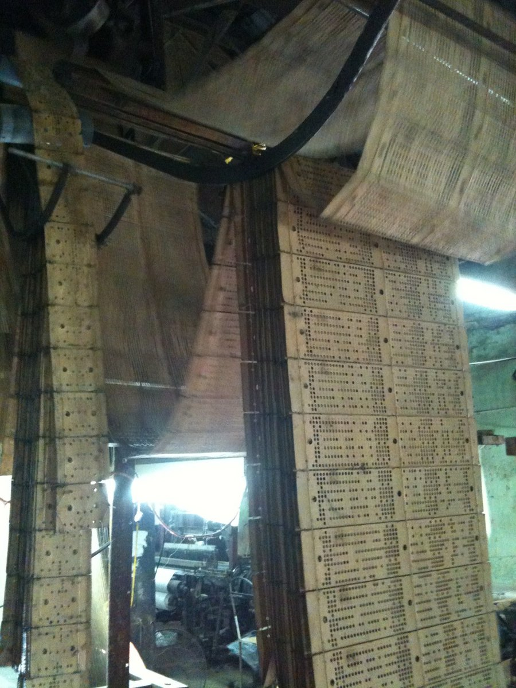
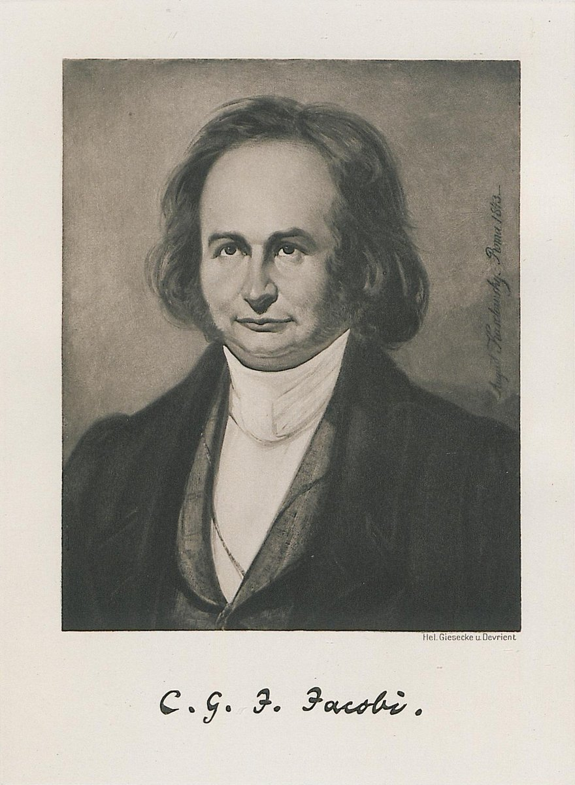
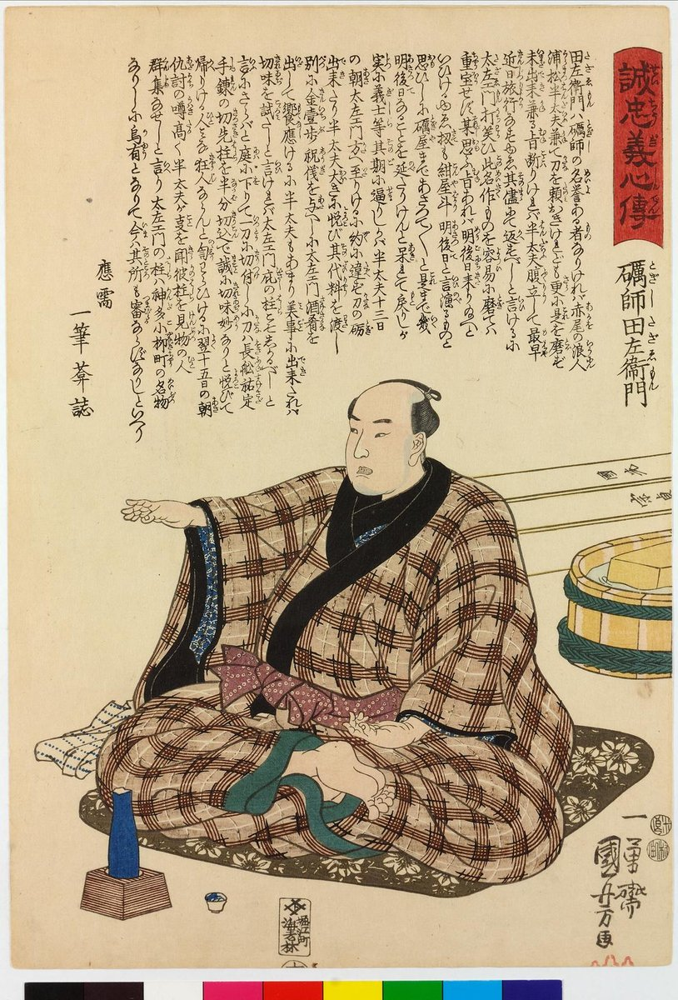
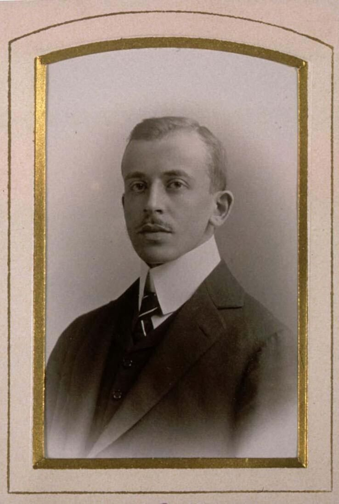
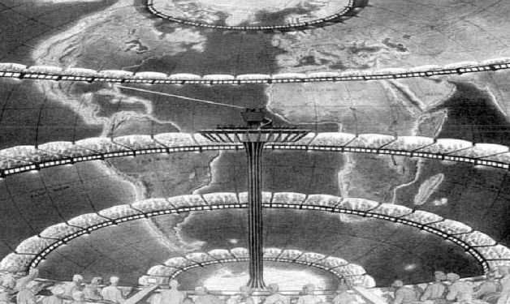
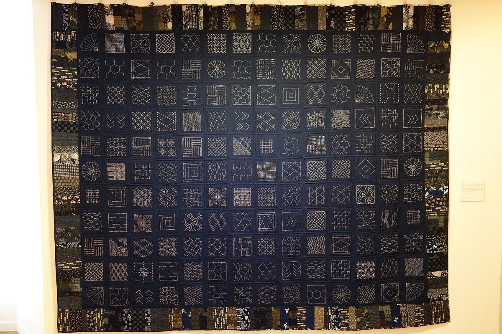

第50回
積み上がる塔の足もとで、人々が石を運んでいる。
Pieter Bruegel the Elder『バベルの塔』（ウィーン美術史美術館、1563年）／Public domain／Wikimedia Commons（塔の中ほどから足もとまでを横長に切り出した）
未知数が何千何万もある連立方程式を、計算機でどう解くか。消去の記録をとるLU分解、答えに少しずつ近づく反復法、最大の固有値だけを取り出すべき乗法。そして熱方程式を格子点の連立方程式に直す差分法で、「刻みを大きくしすぎると爆発する」条件を、行列の固有値から導く。
第1回から続く約束どおり、新しい記号は緑色の枠（記号）で「①読み方 ②日本語での意味 ③省略していない書き方 ④どこで出会うか」を書く。式変形は1行に1操作だけ進め、使った規則を右か下に書く。数値の計算は、本文に出てくるものはすべて Python で別に検算した（教材には Python のコードは載せない）。
この回は、第17回の連立一次方程式の消去、第20回の固有値、第41回の熱方程式を土台にして、第48回の誤差と第49回のオイラー法の考え方を使う。第48回は作成中のため、そのリンクは予定どおりのファイル名とアンカーを指している。
この回は文字 $L$ に2つの意味が出会う。①この回の前半の $L$ は「下三角行列」（LU分解の $L$。lower の頭文字）。②第41回の $L$ は棒の長さ。後半の差分法では棒の長さの意味に戻る。混ざらないよう、5章では棒の長さを $L$ と書くのは最初の1回だけにして、数値例はすべて $L=1$ とおく。また $U$ はこの回では「上三角行列」だけに使い、第41回の温度 $u(x,t)$（小文字）とは別である。
最初に、この回で新しく説明する記号と、前の回で説明済みの記号を分けて並べる。右の列の「→」で説明のある場所へ飛べる。
| 記号 | 読み方 | ざっくりした意味 | 説明 |
|---|---|---|---|
| $A=LU$（$L$：下三角、$U$：上三角） | エー イコール エル・ユー | 消去の記録。$A$ を2つの三角行列の積に分ける | →2.2 |
| 前進代入、後退代入 | ぜんしんだいにゅう、こうたいだいにゅう | 三角行列の連立方程式を、上から（下から）1つずつ解く | →2.5 |
| $PA=LU$（$P$：置換行列） | ピー・エー イコール エル・ユー | 行を入れ替えてから分解する（ピボット選択） | →2.7 |
| 演算回数（flop） | フロップ | 足し算・掛け算などの回数。手間の目安 | →2.8 |
| $A=L_0+D+U_0$ | エル・ゼロ、ディー、ユー・ゼロ | 行列を、対角より下・対角・対角より上の3つに切り分ける | →3.2 |
| ヤコビ法、ガウス＝ザイデル法 | ヤコビほう、ガウス・ザイデルほう | 古い値（新しい値）を使って未知数を1つずつ更新する反復 | →3.3、→3.4 |
| $M$（反復行列）、$\boldsymbol e^{(k)}$ | エム、イー・ケー | 誤差を1回の反復で何に写すか／$k$ 回目の誤差 | →3.6 |
| $\rho(M)$（スペクトル半径） | ロー・エム | $M$ の固有値の絶対値の最大 | →3.6 |
| $\|\boldsymbol v\|_\infty$、対角優位 | ノルム・無限大、たいかくゆうい | 成分の絶対値の最大／対角成分が他を上回る | →3.7 |
| べき乗法、最大固有値 | べきじょうほう | $A$ を掛けては長さをそろえる反復で、絶対値最大の固有値を探す | →4.2 |
| レイリー商 $R(\boldsymbol v)$ | レイリーしょう | 固有値の推定値 $\boldsymbol v^{\mathsf T}A\boldsymbol v/\boldsymbol v^{\mathsf T}\boldsymbol v$ | →4.4 |
| $u_j^n$（格子点の値） | ユー・ジェイ・エヌ | 位置 $x_j$、時刻 $t^n$ での温度の近似値 | →5.1 |
| $r=k\Delta t/\Delta x^2$（格子比） | アール | 時間刻みと空間刻みの比を、拡散率で測ったもの | →5.3 |
| 陽解法、陰解法 | ようかいほう、いんかいほう | 次の時刻の値を式で直接求める／連立方程式を解いて求める | →5.3、→5.7 |
| $T$（三重対角行列）、$G_m$（増幅率） | ティー、ジー・エム | 二階差分を行列にしたもの／モード $m$ が1歩で何倍になるか | →5.5、→5.5 |
| 記号 | 意味 | 説明のある場所 |
|---|---|---|
| $A\boldsymbol x=\boldsymbol b$、拡大係数行列 | 連立一次方程式とその行列での書き方 | 第17回、拡大係数行列 |
| 行基本変形、ピボット、階段行列 | 消去で使う3種類の操作、各行の先頭の0でない成分 | 第17回、ピボット、階段行列 |
| 行列とベクトルの積、$AB$、$A^{-1}$ | 写像の合成と逆 | 第16回、積、逆行列 |
| 単位行列 $I$、転置 ${}^{\mathsf T}$、ノルム $\|\boldsymbol v\|$ | 対角が1の行列、行と列の入れ替え、長さ | 第5回、転置、ノルム |
| 三角行列、行列式 | 対角の片側が全部0の行列、$\det$ | 第18回 三角行列、行列式 |
| 置換 | 並べ替え | 第18回 |
| 内積、QR分解 | $\boldsymbol a^{\mathsf T}\boldsymbol b$、直交行列×上三角行列 | 第19回 内積、QR分解 |
| 固有値・固有ベクトル、特性多項式 | $A\boldsymbol v=\lambda\boldsymbol v$ | 第20回、特性多項式 |
| 対角化、対称行列 | $A=PDP^{-1}$、$A^{\mathsf T}=A$ | 第21回 対角化、対称行列、直交対角化 |
| 熱方程式 $u_t=ku_{xx}$、ディリクレ条件 | 棒の温度変化、両端を0に保つ | 第41回、ディリクレ、変数分離 |
| ラプラス方程式 | $u_{xx}+u_{yy}=0$ | 第43回 |
| オイラー法、後退オイラー法、増幅率 $R(z)$、安定領域 | ODE の数値解法とその安定性 | 第49回、後退オイラー法、増幅率、安定領域 |
| 誤差、丸め誤差、二階差分、$O(h^p)$ | 近似の誤差と差分近似 | 第48回、丸め誤差、二階差分、$O(h^p)$ |
| 総和 $\sum$、数列 | 足し算の省略記号 | 第4回 |
PHOTO 1｜現実

壁いっぱいの配線盤の前で、二人が操作盤を見ている。
米陸軍（1947年ごろ、弾道研究所328号棟で ENIAC をプログラムするグレン・ベックとベティ・スナイダー）／Public domain／Wikimedia Commons
MITATE 1｜見立て
低い丘のような石の段が、芝の広場の向こうに積み重なっている。
Gunawan Kartapranata（2008年、ボロブドゥール寺院）／Public domain／Wikimedia Commons（縮小した）
第17回では、未知数が3つ程度の連立一次方程式を、行基本変形（消去）で解いた。ところが、研究室で出会う連立方程式は、未知数が桁違いに多い。たとえば、棒の温度を100か所で知りたければ未知数は100個、板の温度を縦横100か所ずつで知りたければ 100×100＝10000 個になる。第5章で見るように、微分方程式を計算機で解こうとすると、ほぼ必ずこの形の連立方程式に行き着く。
この回は、第17回で習った $A\boldsymbol x=\boldsymbol b$ を、未知数の数 $n$ が大きくなっても解けるようにする回である。第17回の「手順」を、計算機が実行できる形（アルゴリズム）に書き直し、その手間を数える。覚えている人は飛ばしてよいが、念のため $A\boldsymbol x=\boldsymbol b$ の意味を確かめる。
$A$ は $n\times n$ の行列（第5回）、$\boldsymbol x$ は未知数を縦に並べたベクトル、$\boldsymbol b$ は右辺を縦に並べたベクトルである。$A\boldsymbol x=\boldsymbol b$ は、$n$ 本の式 $$ a_{i1}x_1+a_{i2}x_2+\cdots+a_{in}x_n=b_i\qquad(i=1,2,\dots,n) $$ をまとめて書いたものである（第16回の行列とベクトルの積の定義を、$i$ 行目について書き下した）。この回では、$A$ が正則（逆行列がある）で、答えがただ1つに決まる場合だけを扱う。
未知数が $n$ 個のとき、第18回の方法を素直に使うと、解はクラメルの公式（行列式の比 $x_i=\det A_i/\det A$）で書ける。行列式を定義どおり（置換すべてについての和、または余因子展開）に計算すると、$n$ 個の数の並べ替えの数 $n!$（$n$ の階乗。第4回）に比例する回数の掛け算が必要になる。
$n=10$ なら $10!=3\,628\,800$、$n=20$ なら $20!\approx2.4\times10^{18}$ である。1秒に $10^{9}$ 回計算できる計算機でも、$20!$ 回は約77年かかる（$2.4\times10^{18}\div10^9\approx2.4\times10^{9}$ 秒で、1年は約 $3.15\times10^7$ 秒）。未知数がたった20個で、である。
図1.1 を見る。階乗 $n!$ の増え方と、次の1.3で述べる消去法の回数 $n^3$ の増え方を、縦軸を対数目盛にして並べた。
「$\boldsymbol x=A^{-1}\boldsymbol b$ だから、まず逆行列を求めればよい」は、数学としては正しいが、計算の方法としては勧められない。逆行列を求めるには $A$ の掃き出し（第17回 6.1）が必要で、それは $\boldsymbol b$ を1本解くより多くの仕事である。2.8 で数えるように、逆行列を作る手間は、$A\boldsymbol x=\boldsymbol b$ を1本解く手間の約3倍で、しかも誤差の面で得をしない。
第17回の消去（上から順に、下の行から先頭の成分を消す）をそのまま計算機に実行させると、手間は $n^3$ に比例する程度で済む（2.8 で数える）。$n=20$ なら $8000$ 回程度、$n=10000$ でも $10^{12}$ 回ほどで、現代の計算機なら分の単位で終わる。階乗とは別世界である。
この回の内容を、図1.2 の地図で先に見ておく。左の枠が「問題はどこから来るか」、中央が「その連立方程式をどう解くか」、右が「固有値をどう求めるか」である。
$A\boldsymbol x=\boldsymbol b$ を定義どおり（クラメルの公式）に解くと手間は $n!$、消去法なら $n^3$ 程度。計算機で現実に解けるのは後者で、この回はその消去法を「LU分解」の形に整え、さらに大きな問題向けの反復法、固有値向けのべき乗法、そして方程式がどこから来るのか（差分法）を順に見る。
PHOTO 2｜現実

穴のあいた長い紙の帯が、織機の上から何枚もつながって垂れている。
Dragfyre（2011年、ヴァンフック〔ベトナム〕の絹織機で使うパンチカード）／CC BY-SA 3.0／Wikimedia Commons（縮小した）
MITATE 2｜見立て
色糸を決まった順序で組んだ紐が、5本並んでいる。
Ködermaus（2012年、組紐の様式の編み）／CC BY-SA 3.0／Wikimedia Commons（縮小した）
第17回の消去は、拡大係数行列 $[\,A\mid\boldsymbol b\,]$ に行基本変形をかけた。この方法には弱点がある。右辺 $\boldsymbol b$ が変わるたびに、消去を最初からやり直すことになる点である。実際には、同じ $A$ に対して $\boldsymbol b$ だけを何度も変えて解く場面が多い。たとえば第5章の熱方程式の計算では、時刻が1つ進むごとに $\boldsymbol b$（前の時刻の温度）が変わり、$A$ は変わらない。
消去で $A$ に何が起きたかを、$\boldsymbol b$ と無関係に取り出して保存できないか。それが LU 分解である。
まず、2種類の三角行列の言葉を確かめる（第18回の三角行列。覚えている人は飛ばしてよい）。上三角行列は、対角成分より下がすべて $0$ の正方行列（対角と、それより上だけに数が並ぶ）。下三角行列は、対角成分より上がすべて $0$ の正方行列。たとえば $$ \begin{pmatrix}1&0&0\\2&1&0\\4&3&1\end{pmatrix}\ \text{は下三角},\qquad \begin{pmatrix}2&1&1\\0&1&1\\0&0&2\end{pmatrix}\ \text{は上三角}. $$
①読み方：「エー イコール エル・ユー」。$L$ は「エル」、$U$ は「ユー」。「LU分解」「LU分解する」という。
②日本語での意味：正方行列 $A$ を、対角成分がすべて1の下三角行列 $L$（lower の頭文字）と上三角行列 $U$（upper の頭文字）の積に分けること。$U$ は第17回の消去で最後に得られる階段行列、$L$ は消去の途中で使った「何倍して引いたか」の記録である。
③省略していない書き方：$n\times n$ 行列 $A$ に対し、次の3つを満たす $L$ と $U$ を求めることを「LU分解」という。(i) $L$ は下三角で、対角成分がすべて $1$。(ii) $U$ は上三角。(iii) 行列の積 $LU$ が $A$ に等しい。式で書けば $A=LU$ で、成分で書けば $$ a_{ij}=\sum_{k=1}^{n}l_{ik}\,u_{kj}\qquad(i,j=1,\dots,n) $$ （積の成分表示。$l_{ik}$ は $L$ の $i$ 行 $k$ 列の成分、$u_{kj}$ は $U$ の $k$ 行 $j$ 列の成分）。三角の形から、$k$ が $i$ より大きいと $l_{ik}=0$、$k$ が $j$ より大きいと $u_{kj}=0$ なので、和は $k=1$ から $\min(i,j)$ までだけに残る。
④どこで出会うか：連立方程式の直接解法（NumPy や MATLAB の solve の内部）、行列式の計算、逆行列の計算、有限要素法・差分法のソルバ。
① $L$ の対角を $1$ にそろえる流儀（上の定義。ドゥーリトル法）と、$U$ の対角を $1$ にそろえる流儀（クラウト法）がある。この回は前者。② 本によっては $L$ が下三角、$U$ が上三角という約束のかわりに、$R$（right）を上三角に使う（第19回のQR分解の $R$ がそう）。③ $L$ は第41回では棒の長さだった（この回の冒頭の注意を参照）。
図2.1 を見る。$A$ を、下三角の $L$ と上三角の $U$ の積として並べた。色のついた部分だけに数が入り、白い部分は $0$（あるいは $L$ の対角の $1$）である。
次の行列で、実際に手を動かす。 $$ A=\begin{pmatrix}2&1&1\\4&3&3\\8&7&9\end{pmatrix}. $$ 第17回の消去と同じ手順で、$2$ 行目と $3$ 行目の第1成分を消す。引く倍率を「乗数」と呼び、$l_{21},l_{31},\dots$ と書いて記録する。乗数 $l_{ij}$ は、「$i$ 行目から $j$ 行目の何倍を引くか」を表す（ピボットで割って決まる）。
ステップ1（1列目を消す）。ピボットは $a_{11}=2$。
ここまでで行列は $\begin{pmatrix}2&1&1\\0&1&1\\0&3&5\end{pmatrix}$ になった。
ステップ2（2列目を消す）。ピボットは $2$ 行 $2$ 列の $1$。
こうして、上三角行列 $U=\begin{pmatrix}2&1&1\\0&1&1\\0&0&2\end{pmatrix}$ が得られた。使った乗数 $l_{21}=2,\ l_{31}=4,\ l_{32}=3$ を、$L$ の対応する位置（$i$ 行 $j$ 列）に置き、対角に $1$、上側に $0$ を置く： $$ L=\begin{pmatrix}1&0&0\\ \mathbf{2}&1&0\\ \mathbf{4}&\mathbf{3}&1\end{pmatrix}. $$ 図2.2 に、消去の様子と乗数の置き場所を示す。
確かめ：$LU$ を計算する。成分ごとに（2.2 の和の式で）：
3行とも $A$ の行に一致するので、$A=LU$ である。
これは偶然ではない。理由を、省略せずに書く。ステップ1で行ったことは「2行目から 1行目の $l_{21}$ 倍を引く」「3行目から 1行目の $l_{31}$ 倍を引く」で、これは左から行列 $E_1$ を掛けることに当たる（第17回の行基本変形は、左から掛ける行列として書ける）： $$ E_1=\begin{pmatrix}1&0&0\\-l_{21}&1&0\\-l_{31}&0&1\end{pmatrix}=\begin{pmatrix}1&0&0\\-2&1&0\\-4&0&1\end{pmatrix}. $$ 確かめ：$E_1A$ の2行目は $-2\cdot(2,1,1)+1\cdot(4,3,3)+0\cdot(8,7,9)=(0,1,1)$、3行目は $-4\cdot(2,1,1)+(8,7,9)=(0,3,5)$ で、ステップ1の結果と一致する。同じく、ステップ2は $$ E_2=\begin{pmatrix}1&0&0\\0&1&0\\0&-l_{32}&1\end{pmatrix}=\begin{pmatrix}1&0&0\\0&1&0\\0&-3&1\end{pmatrix}. $$ 全体では $E_2E_1A=U$ である（先に $E_1$、次に $E_2$。行列の積は右から順に作用する）。
本教材では、省略の段階を1段ずつ並べる。各段で何を省き、なぜ誤解が起きないかを書く。以後 LU 分解の式を使うときは、この箱にリンクする。
| 段 | 書き方 | この段で省いたもの | 省いても誤解が起きない理由 |
|---|---|---|---|
| S0（完全形） | 「1行目の2倍を2行目から引く。1行目の4倍を3行目から引く。2行目の3倍を3行目から引く。すると上三角になる」 | なし（操作を言葉で全部書く） | ― |
| S1 | $E_2E_1A=U$ | 各操作を左から掛ける行列 $E_k$ にまとめ、個々の引き算を書かない | $E_k$ の中身は、使った乗数だけで決まる（上の $E_1,E_2$ の形） |
| S2 | $A=LU$、$L=E_1^{-1}E_2^{-1}$ | 逆行列 $E_k^{-1}$ の積を $L$ と名づける | $E_k^{-1}$ は $E_k$ の乗数の符号を変えただけで、積は乗数を $L$ の対応する位置に並べるだけ（下で確かめる） |
| S3 | $PA=LU$ | 行の入れ替え（2.7）を $P$ にまとめる | $P$ は行を並べ替えるだけの行列で、解は変わらない |
S2 の理由を確かめる。$E_2E_1A=U$ の両辺に、左から $E_2^{-1}$、次に $E_1^{-1}$ を掛けると $A=E_1^{-1}E_2^{-1}U$ となる（逆行列を左から掛けて消す。第16回）。ここで $$ E_1^{-1}=\begin{pmatrix}1&0&0\\2&1&0\\4&0&1\end{pmatrix},\quad E_2^{-1}=\begin{pmatrix}1&0&0\\0&1&0\\0&3&1\end{pmatrix} $$ （「2倍を引く」操作の逆は「2倍を足す」操作だから、符号が逆になる）。確かめ：$E_1E_1^{-1}$ の2行目は、$(-2,1,0)$ に $E_1^{-1}$ の各列を掛けて、1列目が $-2\cdot1+1\cdot2+0\cdot4=0$、2列目が $-2\cdot0+1\cdot1+0\cdot0=1$、3列目が $0$。これは $I$ の2行目 $(0,1,0)$ に一致する。この2つの積を計算する： $$ E_1^{-1}E_2^{-1}=\begin{pmatrix}1&0&0\\2&1&0\\4&0&1\end{pmatrix}\begin{pmatrix}1&0&0\\0&1&0\\0&3&1\end{pmatrix}=\begin{pmatrix}1&0&0\\2&1&0\\4&3&1\end{pmatrix}=L. $$ 3行目を例にとると、$(4,0,1)$ に右の行列の列をそれぞれ掛けて、$4\cdot1+0+0=4$、$0+0+1\cdot3=3$、$0+0+1\cdot1=1$。乗数 $2,4,3$ が、そのまま $L$ に並んだ。順番が逆（$E_2$ 先に、$E_1$ 後）だと、こうはきれいにならない。消去の順（列を左から右へ）に合わせて並べるから、並べるだけで $L$ になる。
LU 分解は、第17回の消去の「結果」($U$) と「手順の記録」($L$ の乗数) を、同時に取っておく書き方である。$A=LU$。
$A=LU$ が手に入ったとする。$A\boldsymbol x=\boldsymbol b$ は $LU\boldsymbol x=\boldsymbol b$ である。ここで $\boldsymbol y:=U\boldsymbol x$（途中の未知ベクトル）とおくと、次の2つの連立方程式に分かれる： $$ L\boldsymbol y=\boldsymbol b,\qquad U\boldsymbol x=\boldsymbol y. $$ （確かめ：2つ目を1つ目に入れると $L(U\boldsymbol x)=\boldsymbol b$、行列の積は結合法則を満たすので $(LU)\boldsymbol x=A\boldsymbol x=\boldsymbol b$ に戻る。）どちらも三角行列の連立方程式で、1つずつ順に解ける。
①読み方：「ぜんしんだいにゅう」。英語では forward substitution。
②日本語での意味：下三角の連立方程式を、1行目から順に、すでに分かった値を代入して1つずつ解く方法。
③省略していない書き方：$L$ の対角が $1$ のとき、$L\boldsymbol y=\boldsymbol b$ の $i$ 行目は $\sum_{k=1}^{i}l_{ik}y_k=b_i$、すなわち $y_i+\sum_{k=1}^{i-1}l_{ik}y_k=b_i$ である（$k\gt i$ では $l_{ik}=0$）。移項して $$ y_i=b_i-\sum_{k=1}^{i-1}l_{ik}\,y_k\qquad(i=1,2,\dots,n). $$ $i=1$ のときは和が空（足すものがない）なので $y_1=b_1$。$i=2$ なら $y_2=b_2-l_{21}y_1$、のように、右辺の $y_k$ はすでに求めた $y_1,\dots,y_{i-1}$ だけである。
④どこで出会うか：LU分解の解法、ガウス＝ザイデル法（3.4）。
①読み方：「こうたいだいにゅう」。英語では back substitution。
②日本語での意味：上三角の連立方程式を、最後の行から順に、すでに分かった値を代入して1つずつ解く方法。
③省略していない書き方：$U$ の対角成分 $u_{ii}$ がすべて $0$ でないとき、$U\boldsymbol x=\boldsymbol y$ の $i$ 行目は $\sum_{k=i}^{n}u_{ik}x_k=y_i$（$k\lt i$ では $u_{ik}=0$）。$x_i$ の項を左に残して $$ x_i=\frac{1}{u_{ii}}\Bigl(y_i-\sum_{k=i+1}^{n}u_{ik}\,x_k\Bigr)\qquad(i=n,n-1,\dots,1). $$ $i=n$ のときは和が空なので $x_n=y_n/u_{nn}$。次に $x_{n-1}$、$x_{n-2}$ と番号を減らして進む。
④どこで出会うか：LU分解の解法、第17回の階段行列からの解の読み取り（第17回 3章）。
2.3 の $A=LU$ で $\boldsymbol b=(4,10,24)^{\mathsf T}$ を解く（${}^{\mathsf T}$ は転置で、行ベクトルを列ベクトルに立てる）。
前進代入 $L\boldsymbol y=\boldsymbol b$：
後退代入 $U\boldsymbol x=\boldsymbol y=(4,2,2)^{\mathsf T}$：
答え $\boldsymbol x=(1,1,1)^{\mathsf T}$。確かめ：$A\boldsymbol x$ の各行は $2+1+1=4$、$4+3+3=10$、$8+7+9=24$ で、$\boldsymbol b$ に一致する。図2.3 に、この2回の代入の流れを示す。
同じ $A$ で、右辺を $\boldsymbol b'=(1,0,0)^{\mathsf T}$ に変えて解く。$L$ と $U$ は作り直さない。前進代入：$y_1=1$、$y_2=0-2\cdot1=-2$、$y_3=0-4\cdot1-3\cdot(-2)=-4+6=2$。後退代入：$x_3=2/2=1$、$x_2=(-2-1\cdot1)/1=-3$、$x_1=(1-1\cdot(-3)-1\cdot1)/2=(1+3-1)/2=\frac32$。答え $\boldsymbol x=(\frac32,-3,1)^{\mathsf T}$。確かめ：1行目 $2\cdot\frac32+(-3)+1=1$、2行目 $4\cdot\frac32-9+3=0$、3行目 $8\cdot\frac32-21+9=0$。
この $\boldsymbol x$ は、$A^{-1}$ の1列目に当たる（$A\boldsymbol x=\boldsymbol e_1$ を解いたので）。つまり $A^{-1}$ の各列は、右辺を $\boldsymbol e_1,\boldsymbol e_2,\dots,\boldsymbol e_n$ にして $n$ 回解けば得られる。
手間の差を数える（演算の数え方は 2.8）。$LU$ を作るのに約 $\frac23n^3$ 回、1本の右辺について2回の代入で約 $2n^2$ 回かかる。右辺が $m$ 本あるとき、毎回消去をやり直すと約 $m\cdot\frac23n^3$、LU分解を1回だけ作れば約 $\frac23n^3+m\cdot2n^2$ である。$n=1000$ なら $n^3=10^9$ に対し $n^2=10^6$ で、1000倍の差がある。図2.4 に、右辺の本数と合計の手間の関係を示す。
消去の乗数は $l_{ij}=a_{ij}/(\text{ピボット})$ と、ピボットでの割り算で決まる。ピボットが $0$ なら、そもそも割れない（そのときは第17回の行の入れ替えをした）。ところが、$0$ ではないが極端に小さいときも、計算機では問題が起きる。
例：$\varepsilon=10^{-20}$ として $$ \begin{pmatrix}\varepsilon&1\\1&1\end{pmatrix}\begin{pmatrix}x_1\\x_2\end{pmatrix}=\begin{pmatrix}1\\2\end{pmatrix}. $$ 真の解を確かめる。2式目 $x_1+x_2=2$ から 1式目 $\varepsilon x_1+x_2=1$ を引くと $(1-\varepsilon)x_1=1$ で、$x_1=1/(1-\varepsilon)\approx1$。2式目に戻して $x_2=2-x_1\approx1$。つまり真の解は、ほぼ $(1,1)^{\mathsf T}$ である。
行を入れ替えずに LU 分解する。乗数 $l_{21}=1/\varepsilon=10^{20}$。$U$ の右下は $u_{22}=1-l_{21}\cdot1=1-10^{20}$ だが、丸め誤差のため（倍精度は有効数字約16桁）、$1$ が $10^{20}$ に埋もれて $u_{22}=-10^{20}$ になる。前進代入：$y_1=1$、$y_2=2-10^{20}\cdot1=-10^{20}$（2も埋もれる）。後退代入：$x_2=y_2/u_{22}=1$、$x_1=(1-1\cdot x_2)/\varepsilon=(1-1)/\varepsilon=0$。$x_1$ が $1$ ではなく $0$ になる。実際に倍精度で計算してもこのとおりになる。
図2.5 を見る。行を入れ替えて、絶対値が大きい方をピボットにすると、同じ計算が正しく進む。
①読み方：「ぶぶんピボットせんたく」。式は「ピー・エー イコール エル・ユー」。$P$ は「置換行列（ちかんぎょうれつ）」。
②日本語での意味：消去の各ステップで、ピボットの下にある成分のうち絶対値が最大の行を、ピボットの行と入れ替える。そうすると乗数の絶対値がすべて $1$ 以下になり、桁あふれや桁落ちを防げる。入れ替えの記録が $P$ である。
③省略していない書き方：$P$ は、単位行列 $I$ の行を並べ替えて作った行列（行ごとに1が1つだけ、列ごとにも1が1つだけ）。$PA$ は $A$ の行を並べ替えた行列になる。並べ替えた行列 $PA$ に、2.2〜2.4 の LU 分解をそのまま適用すると、乗数の絶対値がすべて $1$ 以下になる。このとき $PA=LU$ が成り立つ。上の例では、1行目と2行目を入れ替える $P=\begin{pmatrix}0&1\\1&0\end{pmatrix}$ を使う。$PA=\begin{pmatrix}1&1\\\varepsilon&1\end{pmatrix}$ で、乗数は $l_{21}=\varepsilon/1=10^{-20}$（小さい）、$u_{22}=1-10^{-20}\cdot1\approx1$。右辺にも同じ並べ替えを施して $P\boldsymbol b=(2,1)^{\mathsf T}$ とすれば、$x_2=1$、$x_1=2-1=1$ と正しい答えが出る。
④どこで出会うか：数値計算ライブラリのLU分解（NumPy の scipy.linalg.lu など）は、標準でこの方法を使う。第17回の「0のピボットを避けて行を入れ替える」を、「小さいピボットも避ける」に強めたもの。
「ピボットが $0$ でないなら、入れ替えは不要」は誤り。厳密な数学では、ピボットが $0$ でなければ消去は進められる。しかし計算機の有限桁（丸め誤差）では、ピボットが小さいと乗数が巨大になり、元の情報が桁あふれで失われる。厳密に解ける問題でも、計算の順序によって数値解が壊れるという点が、数値計算の特徴である。
①読み方：「フロップ」。floating-point operation（浮動小数点演算）の略。
②日本語での意味：実数の足し算・引き算・掛け算・割り算を、それぞれ1回と数えた回数。アルゴリズムの手間の目安にする。
③省略していない書き方：「この計算は約 $\frac23n^3$ flop」は、「$n$ が大きいとき、足し・引き・掛け・割りを全部合わせた回数が、ほぼ $\frac23n^3$ に等しい」という意味。$n$ に比例しない小さい項（$n^2$ や $n$）は、$n$ が大きいとき $n^3$ に比べて無視できるので書かない（ランダウの記号 $O(n^2)$ に相当する）。
④どこで出会うか：計算量の見積もり、スーパーコンピュータの性能（毎秒何 flop 出せるか）。
消去の $k$ ステップ目（$k=1,\dots,n-1$）を数える。このとき、まだ消去が済んでいない部分は $(n-k+1)$ 行 $(n-k+1)$ 列の正方形だが、ピボットの行より下の $m:=n-k$ 行について、それぞれ次を行う：
1行あたり $1+2m$ 回、$m$ 行で $m(1+2m)=2m^2+m$ 回。$k$ ステップ目の $m$ は $n-1,n-2,\dots,1$ と動くので、合計は $$ \sum_{m=1}^{n-1}(2m^2+m)=2\sum_{m=1}^{n-1}m^2+\sum_{m=1}^{n-1}m. $$ ここで、総和の公式 $\sum_{m=1}^{n-1}m^2=\dfrac{(n-1)n(2n-1)}{6}$ と $\sum_{m=1}^{n-1}m=\dfrac{(n-1)n}{2}$ を使う。第1項は、$n$ が大きいとき $2\cdot\dfrac{2n^3}{6}=\dfrac{2n^3}{3}$ にほぼ等しく、第2項は $n^2$ の程度で、$n^3$ に比べて小さい。よって約 $\frac23n^3$ である。確かめ（$n=3$）：$m=1,2$ で $(2+1)+(8+2)=13$ 回。公式の主要項 $\frac23\cdot27=18$ との差は、小さい項（$n^2$ 程度）が無視できない小さい $n$ だからである。
図2.6 に、消去が進むにつれて「まだ計算が必要な正方形」が縮んでいく様子を示す。各ステップの手間は、正方形の面積 $m^2$ に比例し、面積の和が $\sum m^2\approx\frac13n^3$（立体の体積）になる。
前進代入・後退代入は、1行あたり約 $2i$ 回、合計 $\sum_{i}2i\approx n^2$ 回ずつで、約 $2n^2$ 回。消去の $\frac23n^3$ に比べて、$n$ が大きいほど無視できる。
① $PA=LU$ で、$A$ の行列式は $\det A=(\pm1)\cdot u_{11}u_{22}\cdots u_{nn}$（符号は行の入れ替えの回数で決まる）。三角行列の行列式は対角成分の積（第18回）で、$L$ の対角が $1$ だからである。2.3 の例では $\det A=2\cdot1\cdot2=4$。② 逆行列は $n$ 回の代入で作れて、約 $2n^3$ 回かかり、解くだけの $\frac23n^3$ のちょうど3倍。1.2 の「逆行列は勧められない」の根拠である。
LU分解は、消去の手順と結果を $L$ と $U$ に取っておく方法。作るのに約 $\frac23n^3$ 回、使うのは2回の代入（約 $2n^2$ 回）。右辺が何本あっても作り直さない。ピボットが小さいときは、絶対値が大きい行を選んで入れ替える。
PHOTO 3｜現実

長い髪の男性の肖像が、署名とともに刷られている（C. G. J. ヤコビ、1843年）。
August Kaselowsky 原画、Giesecke u. Devrient による複製（1843年、ヤコビの肖像）／Public domain／Wikimedia Commons（縮小した）
MITATE 3｜見立て

格子柄の着物の男が、右腕をのばして座り、前に道具を置いた錦絵である。
歌川国芳『礪師田左衛門』（1848年、大英博物館 2008,3037.15412）／Public domain／Wikimedia Commons（縮小した）
LU分解は、手間 $n^3$ 程度で確実に答えが出る。しかし、第5章の差分法のように、行列の大部分が $0$ で、各行に数が数個しか入っていない（疎な行列。「そ・ぎょうれつ」）問題では、事情が変わる。$n=10^6$ の疎な行列を $n\times n$ の表として全部記憶すると $10^{12}$ 個の数が必要だが、$0$ でない数だけなら $n$ の数倍で済む。ところが LU分解を行うと、$0$ だった場所に数が現れてしまう（2次元の格子の問題でその傾向が強い）。
そこで別の考え方をとる。答えの当てずっぽう $\boldsymbol x^{(0)}$ から出発して、「少し良い答え」$\boldsymbol x^{(1)}$ を作り、それをまた直して $\boldsymbol x^{(2)}$ を作る。この更新を繰り返し、答えに十分近づいたところでやめる。1回の更新は行列とベクトルの積と同程度の手間（疎なら $n$ の数倍）で済む。これが反復法である。
①読み方：「エー イコール エル・ゼロ プラス ディー プラス ユー・ゼロ」。
②日本語での意味：正方行列 $A$ を、「対角より下の部分」「対角の部分」「対角より上の部分」の3つの行列の足し算に切り分ける。
③省略していない書き方：$A$ の成分を $a_{ij}$ として、 $$ (L_0)_{ij}=\begin{cases}a_{ij}&(i\gt j)\\0&(i\le j)\end{cases},\quad D_{ij}=\begin{cases}a_{ii}&(i=j)\\0&(i\ne j)\end{cases},\quad (U_0)_{ij}=\begin{cases}a_{ij}&(i\lt j)\\0&(i\ge j)\end{cases}. $$ 添字の $0$ は「対角成分が $0$ である」ことを表す。たとえば $A=\begin{pmatrix}4&1\\2&5\end{pmatrix}$ なら $L_0=\begin{pmatrix}0&0\\2&0\end{pmatrix}$、$D=\begin{pmatrix}4&0\\0&5\end{pmatrix}$、$U_0=\begin{pmatrix}0&1\\0&0\end{pmatrix}$。足すと $A$ に戻る（成分ごとに $0+4+0=4$、$0+0+1=1$、$2+0+0=2$、$0+5+0=5$）。
④どこで出会うか：ヤコビ法・ガウス＝ザイデル法（この章）、行列の対角成分だけを取り出す操作（np.diag）。
LU分解の $L,U$ は積 $A=LU$ で、$L$ の対角は $1$。ここでの $L_0,U_0$ は和 $A=L_0+D+U_0$ で、対角は $0$。そのため区別して添字 $0$ をつけた。本によっては同じ $L,U$ で書くので、式を読むときは「積か和か」を確かめる。
連立方程式の $i$ 番目の式は $$ a_{i1}x_1+\cdots+a_{ii}x_i+\cdots+a_{in}x_n=b_i. $$ これを $x_i$ について解く（$a_{ii}\ne0$ とする）。$x_i$ の項だけ左に残し、他を右に移項し、両辺を $a_{ii}$ で割ると $$ x_i=\frac{1}{a_{ii}}\Bigl(b_i-\sum_{j\ne i}a_{ij}x_j\Bigr). $$ これは本当の答えが満たす式である。右辺の $x_j$ に「いまの当てずっぽう」を入れれば、左辺は「少し良い値」になるだろう、というのがヤコビ法である。
①読み方：「ヤコビほう」。英語では Jacobi method。
②日本語での意味：各式を、その式の「対角の未知数」について解いた形に直し、右辺の他の未知数には前回の反復の値を入れて、全部の未知数を同時に更新する方法。
③省略していない書き方：初期値 $\boldsymbol x^{(0)}$ を決め、$k=0,1,2,\dots$ について、すべての $i=1,\dots,n$ に対し $$ x_i^{(k+1)}=\frac{1}{a_{ii}}\Bigl(b_i-\sum_{j\ne i}a_{ij}\,x_j^{(k)}\Bigr). $$ 右肩の $(k)$ は反復の回数（$k$ 回目の値）で、べき乗ではない。行列で書くと、3.2 の切り分けを使って $$ D\,\boldsymbol x^{(k+1)}=\boldsymbol b-(L_0+U_0)\,\boldsymbol x^{(k)} $$ （成分を並べたものが上の式。$D$ は対角行列なので、左から $D^{-1}$ を掛けるのは各成分を $a_{ii}$ で割ることに当たる）。
④どこで出会うか：反復法の入門。各 $i$ の更新が互いに独立なので、並列計算に向く。
ヤコビ法では、$x_1^{(k+1)}$ を計算し終わった後でも、$x_2^{(k+1)}$ の計算には古い $x_1^{(k)}$ を使う。もったいない。$x_1^{(k+1)}$ が手元にあるなら、それを使えばよいのではないか。
①読み方：「ガウス・ザイデルほう」。英語では Gauss–Seidel method。
②日本語での意味：ヤコビ法と同じ式を使うが、すでに更新した成分は、その場で新しい値に置き換えて次の成分の計算に使う方法。
③省略していない書き方：各 $k$ について、$i=1,2,\dots,n$ の順に $$ x_i^{(k+1)}=\frac{1}{a_{ii}}\Bigl(b_i-\sum_{j\lt i}a_{ij}\,x_j^{(k+1)}-\sum_{j\gt i}a_{ij}\,x_j^{(k)}\Bigr). $$ $j\lt i$ の項は新しい値（$k+1$ 回目）、$j\gt i$ の項はまだ更新していないので古い値（$k$ 回目）。行列で書くと $$ (D+L_0)\,\boldsymbol x^{(k+1)}=\boldsymbol b-U_0\,\boldsymbol x^{(k)}. $$ 左の $D+L_0$ は下三角行列なので、各反復の中で解くのは前進代入（2.5）である。
④どこで出会うか：疎な連立方程式の解法の基本。更新の順序に依存する（入れ替えると別の方法になる）。
図3.1 を見る。上の枠がヤコビ法、下の枠がガウス＝ザイデル法で、$x_3^{(k+1)}$ の計算にどの値を使うかを矢印で示す。
$A=\begin{pmatrix}4&1\\2&5\end{pmatrix}$、$\boldsymbol b=\begin{pmatrix}5\\7\end{pmatrix}$ を解く。真の解は $\boldsymbol x=(1,1)^{\mathsf T}$（確かめ：$4+1=5$、$2+5=7$）。式は $$ 4x_1+x_2=5,\qquad 2x_1+5x_2=7. $$ 各式を対角の未知数について解く：$x_1=\dfrac{5-x_2}{4}$、$x_2=\dfrac{7-2x_1}{5}$。初期値は $\boldsymbol x^{(0)}=(0,0)^{\mathsf T}$。
ヤコビ法（右辺は前回の値だけ）：
ガウス＝ザイデル法（$x_1$ を更新したら、その新しい値を $x_2$ の計算に使う）：
3回目で、ヤコビ法の誤差は $(0.025,0.04)$、ガウス＝ザイデル法は $(0.0025,0.001)$。後者の方が1桁ほど小さい。図3.2 の上の枠は、この反復を2直線の交点（解）に向かう折れ線として描いたものである。
収束しない例。式の順序を変えて $A'=\begin{pmatrix}1&2\\3&1\end{pmatrix}$、$\boldsymbol b'=(3,4)^{\mathsf T}$ とする。真の解は同じ $(1,1)^{\mathsf T}$（$1+2=3$、$3+1=4$）。ヤコビ法は $x_1^{(k+1)}=3-2x_2^{(k)}$、$x_2^{(k+1)}=4-3x_1^{(k)}$ となり、$\boldsymbol x^{(0)}=(0,0)^{\mathsf T}$ から $$ (0,0)\to(3,4)\to(3-8,\,4-9)=(-5,-5)\to(3+10,\,4+15)=(13,19)\to\cdots $$ と、答え $(1,1)$ から離れていく（図3.2 の下の枠）。同じ問題でも、式を並べる順序で収束したりしなかったりする。式の順序を入れ替えて $\begin{pmatrix}3&1\\1&2\end{pmatrix}\boldsymbol x=\begin{pmatrix}4\\3\end{pmatrix}$ にすると、$(0,0)\to(\frac43,\frac32)\to(\frac56,\frac56)\to\cdots$ と近づく。なぜそうなるかは、次の 3.6 で説明する。
反復が答えに近づくかどうかを、「誤差」の動きで調べる。真の解を $\boldsymbol x^*$（本当の答え。$A\boldsymbol x^*=\boldsymbol b$ を満たす）とし、$k$ 回目の誤差ベクトルを $\boldsymbol e^{(k)}:=\boldsymbol x^{(k)}-\boldsymbol x^*$ と定義する。
ヤコビ法の場合。本当の答えも「$D\boldsymbol x^*=\boldsymbol b-(L_0+U_0)\boldsymbol x^*$」を満たす（$A=L_0+D+U_0$ を $A\boldsymbol x^*=\boldsymbol b$ に入れて移項しただけ）。反復の式 $D\boldsymbol x^{(k+1)}=\boldsymbol b-(L_0+U_0)\boldsymbol x^{(k)}$ から、この式を辺々引くと $$ D\,(\boldsymbol x^{(k+1)}-\boldsymbol x^*)=-(L_0+U_0)\,(\boldsymbol x^{(k)}-\boldsymbol x^*)\quad\text{（右辺の }\boldsymbol b\text{ が消えた）}. $$ 左から $D^{-1}$ を掛けて、$\boldsymbol e^{(k+1)}=-D^{-1}(L_0+U_0)\,\boldsymbol e^{(k)}$。ガウス＝ザイデル法も同じ手順で、$(D+L_0)\boldsymbol e^{(k+1)}=-U_0\boldsymbol e^{(k)}$、すなわち $\boldsymbol e^{(k+1)}=-(D+L_0)^{-1}U_0\,\boldsymbol e^{(k)}$ となる。
①読み方：「はんぷくぎょうれつ」。式は「イー・ケー・プラス・イチ イコール エム イー・ケー」。
②日本語での意味：1回の反復で、誤差ベクトルがどんなベクトルに写されるかを表す行列。
③省略していない書き方：ヤコビ法では $M_{\mathrm J}:=-D^{-1}(L_0+U_0)$、ガウス＝ザイデル法では $M_{\mathrm{GS}}:=-(D+L_0)^{-1}U_0$ とおくと、どちらも $$ \boldsymbol e^{(k+1)}=M\,\boldsymbol e^{(k)},\qquad\text{したがって}\quad\boldsymbol e^{(k)}=M^k\,\boldsymbol e^{(0)}. $$ （2つ目は、1つ目を $k$ 回くり返した結果。$M^k$ は $M$ を $k$ 個掛けた行列のべき乗。）
④どこで出会うか：反復法すべて。$\boldsymbol e^{(k+1)}=M\boldsymbol e^{(k)}$ は、第31回の連立ODE $\dot{\boldsymbol e}=C\boldsymbol e$ の「時間を整数に区切った版」に当たる（連続の安定条件は固有値の実部が負、こちらは固有値の絶対値が1より小さい）。
2×2 の例で確かめる。$A=\begin{pmatrix}4&1\\2&5\end{pmatrix}$ のとき、$M_{\mathrm J}=-D^{-1}(L_0+U_0)=-\begin{pmatrix}\frac14&0\\0&\frac15\end{pmatrix}\begin{pmatrix}0&1\\2&0\end{pmatrix}=\begin{pmatrix}0&-\frac14\\-\frac25&0\end{pmatrix}$。誤差の変化を見る：初期誤差 $\boldsymbol e^{(0)}=\boldsymbol x^{(0)}-\boldsymbol x^*=(-1,-1)^{\mathsf T}$ に掛けると $\boldsymbol e^{(1)}=M_{\mathrm J}\boldsymbol e^{(0)}=(\frac14,\frac25)^{\mathsf T}=(0.25,0.4)^{\mathsf T}$。実際、3.5 のヤコビ法の $\boldsymbol x^{(1)}=(1.25,1.4)$ から $(1,1)$ を引くと $(0.25,0.4)$ で、一致した。
$\boldsymbol e^{(k)}=M^k\boldsymbol e^{(0)}$ が $\boldsymbol 0$ に近づくかどうかは、行列のべき乗 $M^k$ が $0$ に近づくかで決まる。ここで固有値の出番である。
①読み方：「スペクトルはんけい」。式は「ロー・エム」。$\rho$ は「ロー」。
②日本語での意味：行列 $M$ の固有値（複素数も含む）の絶対値の最大。
③省略していない書き方：$M$ の固有値を $\mu_1,\dots,\mu_n$（特性方程式の解。複素数でもよい）とするとき $$ \rho(M):=\max_{1\le i\le n}|\mu_i|. $$ $|\mu|$ は複素数の絶対値。実数なら通常の絶対値。
④どこで出会うか：反復法の収束判定、離散時間システムの安定判別（$\rho\lt1$ が安定）、第49回の増幅率 $|R(z)|\lt1$ と同じ考え。
$M$ が対角化可能のとき、任意の初期値 $\boldsymbol x^{(0)}$ について $\boldsymbol e^{(k)}\to\boldsymbol 0$（$k\to\infty$）となるための必要十分条件は $\rho(M)\lt1$。
$M$ の固有値を $\mu_1,\dots,\mu_n$、対応する固有ベクトルを $\boldsymbol v_1,\dots,\boldsymbol v_n$ とする。対角化可能なので、$\boldsymbol v_1,\dots,\boldsymbol v_n$ は基底（第15回）で、初期誤差は $\boldsymbol e^{(0)}=c_1\boldsymbol v_1+\cdots+c_n\boldsymbol v_n$ と一意に書ける。
(1) $M\boldsymbol v_i=\mu_i\boldsymbol v_i$ を使うと、$M\boldsymbol e^{(0)}=\sum c_i\mu_i\boldsymbol v_i$（$M$ を各項に分配）。もう一度掛ければ $M^2\boldsymbol e^{(0)}=\sum c_i\mu_i^2\boldsymbol v_i$。これを繰り返して $\boldsymbol e^{(k)}=M^k\boldsymbol e^{(0)}=\sum_{i=1}^nc_i\,\mu_i^{\,k}\,\boldsymbol v_i$。
(2) すべての $|\mu_i|\lt1$ なら、各 $i$ で $|\mu_i^k|=|\mu_i|^k\to0$（$0\le|\mu|\lt1$ のべき乗は $0$ に収束する。第14回の等比数列）。有限個の項の和なので $\boldsymbol e^{(k)}\to\boldsymbol 0$。
(3) ある $i$ で $|\mu_i|\ge1$ なら、初期値を $\boldsymbol e^{(0)}=\boldsymbol v_i$（その固有ベクトルが実ベクトルのとき）にとると $\boldsymbol e^{(k)}=\mu_i^k\boldsymbol v_i$ で、$|\mu_i|^k\ge1$ なので $\boldsymbol 0$ に近づかない。（固有値が複素数のときは、実部または虚部を初期誤差にとる。）$\square$
$M$ が対角化可能でない場合も結論は同じだが、証明にはジョルダン標準形が要るので、この教材では扱わない。2×2 の例で確かめる。
図3.3 に、これらの固有値を複素平面（第34回）の単位円とともに示す。単位円の内側なら収束、外側なら発散である。
誤差は 1 回の反復でおよそ $\rho(M)$ 倍になる（十分大きい $k$ のとき）。たとえばガウス＝ザイデル法の $\rho=0.1$ は「1回ごとに誤差が約1/10＝有効数字1桁ずつ増える」、3.5 の数値（誤差 $0.025\to0.0025$）と合っている。
$\rho(M)$ を求めるには固有値の計算が要るが、固有値の計算は連立方程式より難しい。そこで、行列の成分を見るだけで収束が保証される条件を述べる。
①読み方：「ノルム・むげんだい」。対角優位は「たいかくゆうい」。
②日本語での意味：$\|\boldsymbol v\|_\infty$ は、ベクトルの成分の絶対値のうち最大のもの（ベクトルの「大きさ」の1つの測り方）。対角優位とは、各行で、対角成分の絶対値が、その行の他の成分の絶対値の和より大きいこと。
③省略していない書き方：$\|\boldsymbol v\|_\infty:=\max_{1\le i\le n}|v_i|$。行列 $A$ が（狭義）対角優位であるとは、すべての行 $i=1,\dots,n$ について $$ |a_{ii}|\gt\sum_{j\ne i}|a_{ij}|. $$ $\|\cdot\|_\infty$ は第5回のユークリッドノルム $\sqrt{v_1^2+\cdots+v_n^2}$ とは別の「大きさ」で、無限大の添字はこの区別のためにつける。
④どこで出会うか：反復法の収束判定。熱伝導・拡散の差分法の行列は（第5章）、対角優位（またはその弱い形）になる。
$A$ が対角優位ならヤコビ法は任意の初期値から収束する。
$q:=\max_i\dfrac{1}{|a_{ii}|}\sum_{j\ne i}|a_{ij}|$ とおく。対角優位の仮定は各行で $\sum_{j\ne i}|a_{ij}|/|a_{ii}|\lt1$ なので、$q\lt1$。誤差の漸化式（3.6）を成分で書くと、 $$ e_i^{(k+1)}=-\frac{1}{a_{ii}}\sum_{j\ne i}a_{ij}\,e_j^{(k)}. $$ 両辺の絶対値をとり、三角不等式（和の絶対値は、絶対値の和以下）を使う： $$ |e_i^{(k+1)}|\le\frac{1}{|a_{ii}|}\sum_{j\ne i}|a_{ij}|\,|e_j^{(k)}|. $$ 各 $|e_j^{(k)}|$ は、定義より $\|\boldsymbol e^{(k)}\|_\infty$ 以下なので、 $$ |e_i^{(k+1)}|\le\Bigl(\frac{1}{|a_{ii}|}\sum_{j\ne i}|a_{ij}|\Bigr)\|\boldsymbol e^{(k)}\|_\infty\le q\,\|\boldsymbol e^{(k)}\|_\infty. $$ これが全部の $i$ で成り立つので、最大をとって $\|\boldsymbol e^{(k+1)}\|_\infty\le q\|\boldsymbol e^{(k)}\|_\infty$。繰り返すと $\|\boldsymbol e^{(k)}\|_\infty\le q^k\|\boldsymbol e^{(0)}\|_\infty\to0$（$0\le q\lt1$）。$\square$
確かめ：$A=\begin{pmatrix}4&1\\2&5\end{pmatrix}$ では $q=\max(\frac14,\frac25)=0.4$。実際、$\|\boldsymbol e^{(1)}\|_\infty=0.4$、$\|\boldsymbol e^{(0)}\|_\infty=1$ で、$0.4\le0.4\cdot1$（等号）。$A'=\begin{pmatrix}1&2\\3&1\end{pmatrix}$ は第1行で $1\gt2$ が成り立たず、対角優位ではない（収束しなかったことと整合する）。行を入れ替えた $\begin{pmatrix}3&1\\1&2\end{pmatrix}$ は $3\gt1$、$2\gt1$ で対角優位。対角優位は十分条件であって必要条件ではない（対角優位でなくても収束する行列はある）。ガウス＝ザイデル法も対角優位で収束することが知られているが、証明は省く。
第5章に出てくる、棒の温度の定常状態の行列 $A=\mathrm{tridiag}(-1,2,-1)$（対角が $2$、すぐ隣が $-1$、他は $0$）で比べる。$n=20$ とする。この行列では $\rho(M_{\mathrm J})=\cos\frac{\pi}{n+1}$ （5.5 で導く固有値の式から出る）、$\rho(M_{\mathrm{GS}})=\cos^2\frac{\pi}{n+1}$（この行列についての既知の事実。数値で確かめた）である。$n=20$ で $\rho(M_{\mathrm J})=0.98883$、$\rho(M_{\mathrm{GS}})=0.97779$。誤差を $10^{-6}$ 倍にするのに必要な反復の回数は、$\rho^k=10^{-6}$ より $k=\dfrac{6\ln10}{-\ln\rho}$ で、ヤコビ法で約1230回、ガウス＝ザイデル法で約615回。ガウス＝ザイデル法はヤコビ法のちょうど2倍速い（$\rho_{\mathrm{GS}}=\rho_{\mathrm J}^2$ だから、$\ln\rho$ が2倍）。
図3.4 に、誤差の大きさの推移を示す（縦軸は対数目盛）。傾きが $\ln\rho$ に当たる。
「反復法は、反復の回数が多いのだから遅い」は一概には言えない。$n=20$ の例では 1000 回を超えるが、反復1回の手間は疎な行列で $O(n)$ なので、$n=10^6$ の問題で LU分解の $n^3$ より遥かに少ない手間で済む場合がある。ただし $n$ が大きくなると $\rho\to1$ で反復回数も増えるので、実際にはより速い方法（SOR 法、共役勾配法、マルチグリッド法。名前だけ紹介する）が使われる。
| 直接法（LU分解） | 反復法（ヤコビ、ガウス＝ザイデル） | |
|---|---|---|
| 終わり方 | 有限回の演算で、（丸め誤差を除き）厳密な解 | 近づく。やめる基準を決める |
| 手間（密な行列） | 約 $\frac23n^3$ | 1回約 $2n^2$、回数は $\rho$ による |
| 右辺が変わる | $L,U$ を使い回せる | 反復を最初からやり直す |
| 収束の保証 | 不要（ピボット選択をする） | $\rho(M)\lt1$ が必要 |
| 得意な問題 | 中規模の密な行列、帯行列 | 大規模で疎な行列 |
反復法は $\boldsymbol e^{(k+1)}=M\boldsymbol e^{(k)}$ という誤差の漸化式で動いていて、答えに近づく条件は $\rho(M)\lt1$（$M$ の固有値がすべて単位円の内側）。対角優位ならヤコビ法は必ず収束し、ガウス＝ザイデル法は新しい値を使う分だけ速い。
PHOTO 4｜現実

口ひげの青年の肖像写真が、金縁の台紙に貼られている（R. v. ミーゼス、1909年）。
作者不明（1909年、リヒャルト・フォン・ミーゼスの肖像写真）／Public domain／Wikimedia Commons
MITATE 4｜見立て
年配の男性が、金の筒の車を手に持ち、顔の前にかざしている。
Rod Waddington（2023年、手持ちのマニ車。Commons の記載は雲南のシャングリラ）／CC BY-SA 2.0／Wikimedia Commons（縮小した）
第20回では、特性方程式 $\det(\lambda I-A)=0$ を解いて固有値を求めた。これは $n=2,3$ なら手で解ける。しかし $n\ge5$ になると、一般の $n$ 次方程式には、四則演算と累乗根だけで書ける解の公式がない（アーベル・ルフィニの定理）。さらに、特性多項式の係数を求めること自体が、$n$ が大きいと手間も誤差も大きい。そこで、特性方程式を使わない固有値の求め方が必要になる。
観察から始める。ベクトル $\boldsymbol v$ に行列 $A$ を何度も掛けるとどうなるか。固有ベクトルは $A\boldsymbol v=\lambda\boldsymbol v$ で、向きを変えずに $\lambda$ 倍される。ではそうでないベクトルに $A$ を掛け続けると、固有値の絶対値が最大の固有ベクトルの方向が、他の方向より速く大きくなっていくのではないか。それがべき乗法である。
①読み方：「べきじょうほう」。英語では power method（power は「累乗」）。
②日本語での意味：適当なベクトルに行列 $A$ を掛けて長さをそろえる操作を繰り返し、$A$ の絶対値最大の固有値（最大固有値、主固有値。dominant eigenvalue）とその固有ベクトルを求める方法。
③省略していない書き方：零でない初期ベクトル $\boldsymbol v^{(0)}$ を決める。$k=0,1,2,\dots$ について $$ \boldsymbol w^{(k+1)}:=A\,\boldsymbol v^{(k)},\qquad\boldsymbol v^{(k+1)}:=\frac{\boldsymbol w^{(k+1)}}{\|\boldsymbol w^{(k+1)}\|}. $$ 2つ目で長さを 1 にそろえる（$\|\cdot\|$ は第5回のノルム）。「最大固有値」とは、固有値のうち絶対値が最大のもの $\lambda_1$ で、2番目に大きいもの $\lambda_2$ より真に大きい（$|\lambda_1|\gt|\lambda_2|\ge\cdots$）場合を指す。
④どこで出会うか：検索エンジンの順位づけ（ページランク）、振動の固有モードの計算、反復法の収束率 $\rho(M)$ の見積もり。
手を動かす。$A=\begin{pmatrix}2&1\\1&3\end{pmatrix}$、$\boldsymbol v^{(0)}=(1,0)^{\mathsf T}$。ここでは長さをそろえる操作を後回しにして、$A$ を掛けるだけを繰り返す（向きだけが問題だから、長さをそろえる操作は途中で何度やっても向きを変えない。4.3）。 $$ A\binom10=\binom21,\quad A\binom21=\binom{2\cdot2+1\cdot1}{1\cdot2+3\cdot1}=\binom55,\quad A\binom55=\binom{15}{20},\quad A\binom{15}{20}=\binom{50}{75}. $$ 各ベクトルの「第2成分÷第1成分」（向きの傾き）は、$0.5,\ 1,\ 1.333,\ 1.5,\dots$ と増えていく。この行列の固有値は、特性方程式 $\lambda^2-5\lambda+5=0$（$\operatorname{tr}A=5$、$\det A=5$。第20回）より $\lambda=\dfrac{5\pm\sqrt5}{2}=3.618,\ 1.382$。大きい方 $\lambda_1=3.618$ の固有ベクトルは $(2-\lambda_1)v_1+v_2=0$（$(A-\lambda_1I)\boldsymbol v=\boldsymbol 0$ の1行目）より $v_2/v_1=\lambda_1-2=1.618$。べき乗法の傾き $0.5,1,1.333,1.5$ は、$1.618$ に向かっている。図4.1 に、$\boldsymbol v^{(k)}$ の向きが固有ベクトルの向きに寄っていく様子を示す。
$A$ が対角化可能で、固有値を絶対値の大きい順に $|\lambda_1|\gt|\lambda_2|\ge\cdots\ge|\lambda_n|$、対応する固有ベクトルを $\boldsymbol u_1,\dots,\boldsymbol u_n$ とする（第21回。固有ベクトルは基底になる）。初期ベクトルを $\boldsymbol v^{(0)}=c_1\boldsymbol u_1+\cdots+c_n\boldsymbol u_n$ と展開する。$c_1\ne0$ とする（最大固有値の方向の成分が少しはある）。
長さをそろえる操作を省いて $A^k\boldsymbol v^{(0)}$ を考える。3.6 の証明と同じく、$A\boldsymbol u_i=\lambda_i\boldsymbol u_i$ を $k$ 回使って $$ A^k\boldsymbol v^{(0)}=\sum_{i=1}^nc_i\lambda_i^k\boldsymbol u_i=\lambda_1^k\Bigl(c_1\boldsymbol u_1+\sum_{i=2}^nc_i\Bigl(\frac{\lambda_i}{\lambda_1}\Bigr)^k\boldsymbol u_i\Bigr)\qquad(\lambda_1^k\text{ でくくった}). $$ $i\ge2$ では $|\lambda_i/\lambda_1|\lt1$ なので $(\lambda_i/\lambda_1)^k\to0$。よって括弧の中は $c_1\boldsymbol u_1$ に近づき、$A^k\boldsymbol v^{(0)}$ の向きは $\boldsymbol u_1$ の向きに近づく。向きの近づく速さは、遅い方の項で決まり、$|\lambda_2/\lambda_1|^k$ に比例する。
長さをそろえる操作が結果を変えない理由：スカラー倍はベクトルの向きを変えない。毎回そろえても、そろえなくても、$\boldsymbol v^{(k)}=A^k\boldsymbol v^{(0)}/\|A^k\boldsymbol v^{(0)}\|$（同じ向きのベクトルを正規化したもの）となる。そろえる目的は、$\lambda_1^k$ が巨大（または微小）になって、計算機で桁あふれ（アンダーフロー）を起こさないようにするためである。
確かめ（上の例）：$\lambda_2/\lambda_1=1.382/3.618=0.382$（$=\frac{3-\sqrt5}{2}$）。傾き $1.618$ との差は $k=2$ で $1.618-1=0.618$、$k=3$ で $0.285$、$k=4$ で $0.118$。比は $0.285/0.618=0.46$、$0.118/0.285=0.41$ と、$0.382$ に近づいている。
① $c_1=0$ のとき（初期ベクトルが $\boldsymbol u_1$ に完全に垂直）は $\boldsymbol u_1$ の成分が出ない。ただし計算機の丸め誤差が $\boldsymbol u_1$ の成分を作るので、実際には収束することが多い。② $|\lambda_1|=|\lambda_2|$（たとえば $\lambda_1=-\lambda_2$）のときは、$(\lambda_2/\lambda_1)^k$ が $0$ に近づかず、向きが収束しない。
固有ベクトルの向きが分かっても、固有値 $\lambda_1$ の値はどう取り出すか。$A\boldsymbol u_1=\lambda_1\boldsymbol u_1$ の両辺に、左から $\boldsymbol u_1^{\mathsf T}$ を掛け（内積をとり。第19回）、$\boldsymbol u_1^{\mathsf T}\boldsymbol u_1$ で割ると $\lambda_1=\dfrac{\boldsymbol u_1^{\mathsf T}A\boldsymbol u_1}{\boldsymbol u_1^{\mathsf T}\boldsymbol u_1}$。これを、まだ固有ベクトルでない $\boldsymbol v$ にも使う。
①読み方：「レイリーしょう」。式は「アール・ブイ」。
②日本語での意味：ベクトル $\boldsymbol v$ が固有ベクトルに近いとき、対応する固有値に近い値になる量。
③省略していない書き方：零でない実ベクトル $\boldsymbol v$ と実正方行列 $A$ に対し $$ R(\boldsymbol v):=\frac{\boldsymbol v^{\mathsf T}A\boldsymbol v}{\boldsymbol v^{\mathsf T}\boldsymbol v}. $$ 分子は $\boldsymbol v$ と $A\boldsymbol v$ の内積、分母は $\boldsymbol v$ の長さの2乗。$\boldsymbol v$ を何倍しても値は変わらない（分子も分母も2乗倍）。
④どこで出会うか：固有値の数値計算、振動の固有振動数の見積もり（エネルギーの比）、二次形式（第21回）。
4.2 の例で計算する（長さをそろえなくてよい）：
真の値 $\lambda_1=3.6180$ との誤差は $0.618,\ 0.118,\ 0.018,\ 0.0026$。誤差の比は $0.19,\ 0.15,\ 0.145$ と、向きの収束率 $0.382$ ではなく、その2乗 $0.382^2=0.146$ に近づく。
理由（$A$ が対称行列のとき）：対称行列の固有ベクトルは互いに直交するように選べる（第21回のスペクトル分解）。長さ1の固有ベクトル $\boldsymbol u_1,\boldsymbol u_2$ を使い、$\boldsymbol v=\boldsymbol u_1+\varepsilon\boldsymbol u_2$ とおく（$\varepsilon$ は小さい数で、向きのずれを表す）。$\boldsymbol u_1^{\mathsf T}\boldsymbol u_2=0$、$\boldsymbol u_i^{\mathsf T}\boldsymbol u_i=1$ を使うと、分子は $\boldsymbol v^{\mathsf T}A\boldsymbol v=\lambda_1+\varepsilon^2\lambda_2$、分母は $1+\varepsilon^2$。 $$ R(\boldsymbol v)-\lambda_1=\frac{\lambda_1+\varepsilon^2\lambda_2}{1+\varepsilon^2}-\lambda_1=\frac{\varepsilon^2(\lambda_2-\lambda_1)}{1+\varepsilon^2}. $$ 向きのずれ $\varepsilon$ が $0.382^k$ に比例するなら、固有値の誤差は $\varepsilon^2\propto(0.382^2)^k$ に比例する。図4.2 に、向きの誤差とレイリー商の誤差の減り方を並べた。
収束率は $|\lambda_2/\lambda_1|$ である。この比が $1$ に近い（最大固有値と2番目が近い）と、非常に遅い。誤差を $10^{-8}$ 倍にするのに必要な回数は、比を $\gamma$ として $\gamma^k=10^{-8}$ から $k=\dfrac{8\ln10}{-\ln\gamma}$。$\gamma=0.382$ なら約19回、$\gamma=0.9$ なら約175回、$\gamma=0.99$ なら約1833回、$\gamma=0.999$ なら約18400回。図4.3 に、比と必要な回数の関係を示す。
べき乗法は絶対値最大の固有値しか求まらない。他の固有値を求めるための変形を、名前と考え方だけ紹介する。
eigvals も内部でこの系統の方法を使う。ここでは詳細を扱わない。べき乗法は、$\boldsymbol v\mapsto A\boldsymbol v$ を繰り返す（長さはそろえる）と、絶対値最大の固有値の固有ベクトルの向きに近づくという性質を使う。向きの誤差は $|\lambda_2/\lambda_1|^k$、対称行列のレイリー商の誤差はその2乗で減る。
PHOTO 5｜現実

地球儀の内側の壁に地図が張られ、中央の柱から人々を見下ろす。
Francois Schuiten による絵（2014年、リチャードソンの「予報工場」の想像図。Jonathan Lawhead の著作に基づく）／CC0／Wikimedia Commons
MITATE 5｜見立て

藍の布いちめんに、白い糸で、様々な模様の升目が縫われている。
Daderot（2013年、トロント・織物博物館の刺し子の展示）／CC0／Wikimedia Commons（縮小した）
第41回では、両端を温度 $0$ に保った棒の熱方程式 $u_t=k\,u_{xx}$ を、変数分離と正弦級数で解いた。ところが、棒の太さが場所で違う、熱を出す物体がある、形が複雑な板になる、といった少し現実的な問題では、第41回の方法で式を書き下せない。そこで、第49回で常微分方程式にやったことを、偏微分方程式にも行う。解の関数を丸ごと求めず、格子点だけで値を求める。
第49回では $x$ だけを格子点 $x_n=x_0+nh$ にした。熱方程式には位置 $x$ と時刻 $t$ の2つの変数があるので、両方を格子にする。棒の長さを $L$ として（5章では $L$ はこの意味だけに使い、数値例は $L=1$ にする。冒頭の注意）、位置の刻みを $\Delta x:=L/N$（棒を $N$ 等分）、時刻の刻みを $\Delta t$ とする。$\Delta$ は「差、刻み」を表すギリシャ文字（デルタ）で、$\Delta x$ は「$x$ の刻み」というひとまとまりの1つの量であり、$\Delta$ と $x$ の積ではない。
①読み方：「ユー・ジェイ・エヌ」。「位置 $j$ 番目、時刻 $n$ 番目の $u$」。
②日本語での意味：位置 $x_j=j\,\Delta x$、時刻 $t^n=n\,\Delta t$ での温度の近似値。
③省略していない書き方：$j=0,1,\dots,N$、$n=0,1,2,\dots$ について $$ x_j:=j\,\Delta x,\quad t^n:=n\,\Delta t,\quad u_j^n\approx u(x_j,t^n). $$ 上の添字 $n$ は時刻の番号であって、べき乗ではない（$u_j^2$ は「$u_j$ の2乗」ではなく「$n=2$ のときの値」）。べき乗を書くときは $(u_j^n)^2$ と書く。時刻の記号を $t^n$ のように上付きにするのは、位置の番号 $j$（下付き）と区別するための数値解析の習慣。第49回の $y_n$ に当たる。
④どこで出会うか：有限差分法・有限体積法の標準的な記法。第41回の初期条件は $u_j^0=u(x_j,0)$、ディリクレ条件は $u_0^n=u_N^n=0$（すべての $n$）。
図5.1 を見る。横軸が位置、縦軸が時刻で、格子点が並ぶ。1つの点 $(x_j,t^n)$ に、1つの数 $u_j^n$ が対応する。下の端（$n=0$）が初期条件、左右の端（$j=0$ と $j=N$）が境界条件で、すでに分かっている。
熱方程式の2つの導関数を、格子点の値で近似する。ともにテイラー展開から出る（覚えている人は飛ばしてよい）。
時間の1階微分。時刻 $t$ のまわりで $u(x,t+\Delta t)=u(x,t)+\Delta t\,u_t(x,t)+\dfrac{(\Delta t)^2}{2}u_{tt}(x,t)+\cdots$（$u_{tt}$ は $t$ で2回偏微分したもの。第11回）。$u(x,t)$ を左辺に移して $\Delta t$ で割ると $$ \frac{u(x,t+\Delta t)-u(x,t)}{\Delta t}=u_t(x,t)+\frac{\Delta t}{2}u_{tt}(x,t)+\cdots. $$ 右辺の第2項以降が誤差で、$O(\Delta t)$（第48回の記法）。第49回のオイラー法と同じ前進差分である。
空間の2階微分。位置 $x$ のまわりで両側に $\Delta x$ ずつ動かす： $$ u(x\pm\Delta x,t)=u\pm\Delta x\,u_x+\frac{(\Delta x)^2}{2}u_{xx}\pm\frac{(\Delta x)^3}{6}u_{xxx}+\frac{(\Delta x)^4}{24}u_{xxxx}\pm\cdots\quad(\text{右辺の }u\text{ 類は }(x,t)\text{ での値}). $$ $+$ と $-$ を足すと、奇数次（$\Delta x$、$(\Delta x)^3$）の項が打ち消し合って $u(x+\Delta x)+u(x-\Delta x)=2u+(\Delta x)^2u_{xx}+\dfrac{(\Delta x)^4}{12}u_{xxxx}+\cdots$。$2u$ を移し、$(\Delta x)^2$ で割ると $$ \frac{u(x+\Delta x,t)-2u(x,t)+u(x-\Delta x,t)}{(\Delta x)^2}=u_{xx}(x,t)+\frac{(\Delta x)^2}{12}u_{xxxx}(x,t)+\cdots. $$ 誤差は $O((\Delta x)^2)$。これが第48回の二階差分（中心差分）である。確かめ：$u=x^2$ なら $(x+h)^2-2x^2+(x-h)^2=2h^2$、これを $h^2$ で割ると $2$ で、$u_{xx}=2$ と一致する（4階以降の導関数が $0$ なので誤差項が消える）。図5.2 に、二階差分が「曲がりぐあい」を測っていることを示す。
熱方程式 $u_t=k\,u_{xx}$ の $u_t$ を前進差分、$u_{xx}$ を二階差分に置き換え、格子点 $(x_j,t^n)$ で等号が成り立つとして書く： $$ \frac{u_j^{n+1}-u_j^n}{\Delta t}=k\,\frac{u_{j+1}^n-2u_j^n+u_{j-1}^n}{(\Delta x)^2}. $$ 両辺に $\Delta t$ を掛けて $u_j^n$ を移項すると、次の時刻の値を今の時刻の値だけから求める式が得られる。
①読み方：「ようかいほう」。FTCS は Forward Time, Centered Space（時間は前進、空間は中心）の略。$r$ は「アール」、「格子比」。
②日本語での意味：次の時刻の値 $u_j^{n+1}$ を、現在の時刻の3点 $u_{j-1}^n,u_j^n,u_{j+1}^n$ から直接計算する方法。
③省略していない書き方： $$ r:=\frac{k\,\Delta t}{(\Delta x)^2},\qquad u_j^{n+1}=u_j^n+r\,\bigl(u_{j+1}^n-2u_j^n+u_{j-1}^n\bigr)\quad(j=1,\dots,N-1). $$ 境界の点 $j=0$ と $j=N$ は、ディリクレ条件で $u_0^{n+1}=u_N^{n+1}=0$ と決まっている。$r$ は無次元（単位のない数）：$k$ の単位が $\mathrm{m^2/s}$、$\Delta t$ が $\mathrm s$、$(\Delta x)^2$ が $\mathrm{m^2}$ なので打ち消し合う。整理して書くと $u_j^{n+1}=r\,u_{j-1}^n+(1-2r)\,u_j^n+r\,u_{j+1}^n$（係数の和は $r+(1-2r)+r=1$）。
④どこで出会うか：差分法の入門、拡散・熱伝導の数値シミュレーション。時間の方向に「現在から未来へ」進むだけで、連立方程式を解かなくてよい。
手を動かす。$k=1$、$L=1$、$N=4$（$\Delta x=0.25$）、$\Delta t=0.025$ とすると $r=\dfrac{1\cdot0.025}{0.25^2}=\dfrac{0.025}{0.0625}=0.4$。初期温度は山形 $u(x,0)=\min(x,1-x)$ とする。格子点は $x_j=0,0.25,0.5,0.75,1$ で、$u_j^0=(0,\ 0.25,\ 0.5,\ 0.25,\ 0)$。
$n=0\to1$：
$n=1\to2$（$u^1=(0,\ 0.25,\ 0.3,\ 0.25,\ 0)$）：
山の頂上（$j=2$）の温度が $0.5\to0.3\to0.26$ と下がり、肩の温度（$j=1,3$）は $0.25\to0.25\to0.17$ と、はじめは変わらず後から下がる。熱が真ん中から端（温度 $0$）へ逃げていく様子と合う。
$N=10$（$\Delta x=0.1$、内部の点は 9 個）、$k=1$、初期温度は同じ山形で、$r=0.4$（$\Delta t=0.004$）と $r=0.6$（$\Delta t=0.006$）の2通りを動かす。違いは $\Delta t$ だけで、式の形は同じである。
図5.3 を見る。$r=0.4$ のときは、温度分布が時間とともになめらかに低くなる。実線が格子点の計算値、細い曲線が第41回の正弦級数による厳密解（山形の初期条件のフーリエ正弦係数は $b_n=\frac{4\sin(n\pi/2)}{n^2\pi^2}$、第41回）で、よく重なる。
図5.4 は $r=0.6$ の場合である。上の枠は 20 ステップ後の分布で、ぎざぎざ（隣り合う点で符号が反対）が現れている。下の枠は温度の絶対値の最大値の推移で、$r=0.4,\ 0.5$ は減っていくのに、$r=0.6$ は途中から指数関数的に増える。
これは物理ではなく、数値解法が壊れたものである。熱は温度の高い方から低い方へ流れるだけなので、温度が初期の最大値 $0.5$ を超えることも、符号が変わることもありえない。次の 5.5 で、なぜ $r\gt\frac12$ で爆発するかを調べる。
各時刻の内部の値をまとめてベクトル $\boldsymbol u^n:=(u_1^n,\dots,u_{N-1}^n)^{\mathsf T}$ とする（$M:=N-1$ 成分。境界の $u_0=u_N=0$ は含めない）。陽解法の式 $u_j^{n+1}=u_j^n+r(u_{j+1}^n-2u_j^n+u_{j-1}^n)$ を、$j=1,\dots,M$ について並べると、行列で書ける。
①読み方：「さんじゅうたいかくぎょうれつ」。$T$ は「ティー」。
②日本語での意味：対角成分と、そのすぐ上・すぐ下の成分だけが $0$ でなく、他はすべて $0$ の行列。ここでは二階差分を行列にしたもの。
③省略していない書き方：$M\times M$ 行列 $$ T:=\begin{pmatrix}-2&1&&&\\1&-2&1&&\\&1&-2&1&\\&&\ddots&\ddots&\ddots\\&&&1&-2\end{pmatrix}\quad(\text{空白はすべて }0). $$ $T$ を縦ベクトル $\boldsymbol v=(v_1,\dots,v_M)^{\mathsf T}$ に掛けると、$j$ 番目の成分は $(T\boldsymbol v)_j=v_{j+1}-2v_j+v_{j-1}$（ただし $v_0=v_{M+1}=0$ とする）。これは二階差分の分子そのものである。陽解法は $$ \boldsymbol u^{n+1}=(I+rT)\,\boldsymbol u^n,\qquad\text{したがって}\quad\boldsymbol u^n=(I+rT)^n\boldsymbol u^0 $$ （単位行列 $I$。$M\times M$）。
④どこで出会うか：差分法の行列表示。転置しても同じ（$T^{\mathsf T}=T$、対称行列）。符号を反転した $-T$ は、3.8 の行列 $\mathrm{tridiag}(-1,2,-1)$ に当たる。
誤差が増幅するかどうかは、3.6・4.3 と同じく、$I+rT$ の固有値で決まる。$T$ の固有値と固有ベクトルは、次のように具体的に求まる。
$M=N-1$ とする。$m=1,2,\dots,M$ について、成分が $(\boldsymbol s_m)_j=\sin\dfrac{m\pi j}{N}$ のベクトル $\boldsymbol s_m$ は、固有値 $\theta_m:=-4\sin^2\dfrac{m\pi}{2N}$ の固有ベクトルである：$T\boldsymbol s_m=\theta_m\boldsymbol s_m$。
$\alpha:=\dfrac{m\pi}{N}$ とおき、$v_j=\sin(j\alpha)$ とする。$(T\boldsymbol v)_j=v_{j+1}-2v_j+v_{j-1}$ の和 $v_{j+1}+v_{j-1}$ を、加法定理（高校の三角関数）で展開する： $$ \sin((j+1)\alpha)=\sin j\alpha\cos\alpha+\cos j\alpha\sin\alpha,\qquad\sin((j-1)\alpha)=\sin j\alpha\cos\alpha-\cos j\alpha\sin\alpha. $$ 2式を足すと $\cos j\alpha\sin\alpha$ の項が打ち消し合って $v_{j+1}+v_{j-1}=2\cos\alpha\,\sin j\alpha=2\cos\alpha\,v_j$。よって $$ (T\boldsymbol v)_j=2\cos\alpha\,v_j-2v_j=-2(1-\cos\alpha)\,v_j=-4\sin^2\frac{\alpha}{2}\,v_j\qquad(\text{半角の公式 }1-\cos\alpha=2\sin^2\tfrac\alpha2). $$ これは $j=1,\dots,M$ の各行で成り立つ。ただし両端の行は $v_0$ または $v_{M+1}$ を使うので、$v_0=\sin0=0$ と $v_{M+1}=v_N=\sin(m\pi)=0$ が、$T$ の定義の「存在しない成分を $0$ とみなす」と一致する。$\alpha/2=\dfrac{m\pi}{2N}$ なので、$\theta_m=-4\sin^2\dfrac{m\pi}{2N}$。$\square$
確かめ：$N=4$（$M=3$）で $m=2$：$\boldsymbol s_2=(\sin\frac\pi2,\ \sin\pi,\ \sin\frac{3\pi}{2})^{\mathsf T}=(1,0,-1)^{\mathsf T}$。$T\boldsymbol s_2$ を1行ずつ計算する：1行目 $-2\cdot1+1\cdot0=-2$、2行目 $1\cdot1-2\cdot0+1\cdot(-1)=0$、3行目 $1\cdot0-2\cdot(-1)=2$。$T\boldsymbol s_2=(-2,0,2)^{\mathsf T}=-2\,\boldsymbol s_2$。公式は $\theta_2=-4\sin^2\frac{2\pi}{8}=-4\cdot\frac12=-2$ で、一致した。
固有ベクトルの正体は、第41回の固有値問題の解 $\sin\dfrac{m\pi x}{L}$ を格子点 $x_j=jL/N$ で取り出したもの（$\sin\dfrac{m\pi x_j}{L}=\sin\dfrac{m\pi j}{N}$）である。第41回で熱方程式を正弦のモードに分けたように、離散版も正弦のモードに分かれる。$m$ が小さいほどゆるやかな山、$m$ が大きいほどぎざぎざの波形である。
$\boldsymbol s_1,\dots,\boldsymbol s_M$ は（$T$ が対称行列で固有値がすべて異なるため）基底をなす（第21回）。初期ベクトルを $\boldsymbol u^0=\sum_mc_m\boldsymbol s_m$ と展開すると、$(I+rT)\boldsymbol s_m=(1+r\theta_m)\boldsymbol s_m$ なので $$ \boldsymbol u^n=\sum_{m=1}^Mc_m\,G_m^{\,n}\,\boldsymbol s_m. $$
①読み方：「ジー・エム」。「増幅率」。
②日本語での意味：モード $m$（$m$ 番目の波形）の大きさが、1時間ステップで何倍になるか。
③省略していない書き方：陽解法では $$ G_m:=1+r\,\theta_m=1-4r\sin^2\frac{m\pi}{2N}\qquad(m=1,\dots,N-1). $$ $|G_m|\lt1$ ならそのモードは減り、$|G_m|\gt1$ なら増える。
④どこで出会うか：フォン・ノイマンの安定性解析（モードに分けて増幅率を調べる方法）。第49回の増幅率 $R(z)$ と同じ役割（5.6）。
すべてのモードが増えない条件は $|G_m|\le1$。$G_m\le1$ は $r\gt0$ から常に成り立つ。$G_m\ge-1$ は、$4r\sin^2\dfrac{m\pi}{2N}\le2$ と同じ。左辺は $m=M=N-1$（最もぎざぎざのモード）で最大になり、$\sin\dfrac{(N-1)\pi}{2N}=\sin\Bigl(\dfrac\pi2-\dfrac{\pi}{2N}\Bigr)=\cos\dfrac{\pi}{2N}$ なので、条件は $$ 4r\cos^2\frac{\pi}{2N}\le2\iff r\le\frac{1}{2\cos^2\frac{\pi}{2N}}. $$ 右辺は $\frac12$ より少しだけ大きい（$N=10$ で $0.5125$、$N=100$ で $0.50012$）。したがって、$r\le\frac12$ ならどんな $N$ でも安定で、$r\gt\frac12$ なら、$N$ が十分大きいとき（$\cos^2\frac{\pi}{2N}$ が $1$ に近づくとき）必ず不安定になる。
図5.5 に、$N=10$ の各モードの増幅率 $G_m$ を、$r=0.4,0.5,0.6$ で描いた。$r=0.6$ では最後のモード（$m=9$）が $G_9=1-2.4\cdot0.9755=-1.341$ と、$-1$ を下回る。符号を変えながら毎回約 $1.34$ 倍されるので、ぎざぎざ波形が爆発する。5.4 の図5.4 の符号が交互に変わるぎざぎざは、この $m=9$ のモードである。
最もゆるやかなモード $m=1$ は、$G_1=1-4r\sin^2\frac{\pi}{2N}\approx1-r\Bigl(\dfrac\pi N\Bigr)^2=1-k\Delta t\,\pi^2$（$L=1$、$\sin x\approx x$、$r/N^2=k\Delta t$）で、厳密解の1ステップあたりの減衰 $e^{-k\pi^2\Delta t}\approx1-k\pi^2\Delta t$ とほぼ一致する（$N=10$、$r=0.4$ で $G_1=0.9608$、$e^{-\pi^2\cdot0.004}=0.9613$）。ゆるやかなモードは正しく減衰し、ぎざぎざモードだけが数値的に増幅される。
同じ結論を、第49回の言葉で言い直せる。空間だけを二階差分にして時間は連続のままにすると、 $$ \frac{d u_j}{dt}=\frac{k}{(\Delta x)^2}\bigl(u_{j+1}-2u_j+u_{j-1}\bigr)\ \text{を並べて}\ \ \frac{d\boldsymbol u}{dt}=\frac{k}{(\Delta x)^2}\,T\,\boldsymbol u $$ という連立の常微分方程式（第31回）になる。これをオイラー法（刻み $h=\Delta t$）で解いたものが、まさに陽解法である：$\boldsymbol u^{n+1}=\boldsymbol u^n+\Delta t\cdot\frac{k}{(\Delta x)^2}T\boldsymbol u^n=(I+rT)\boldsymbol u^n$。
第49回の試験方程式 $y'=\lambda y$ では、オイラー法は $z=h\lambda$ が $-2\lt z\lt0$ のとき安定だった（安定領域）。ここでは各モードが $y'=\lambda_my$ に当たり、$\lambda_m=\dfrac{k}{(\Delta x)^2}\theta_m$ なので $$ z_m=\Delta t\,\lambda_m=\frac{k\Delta t}{(\Delta x)^2}\theta_m=r\theta_m=-4r\sin^2\frac{m\pi}{2N}. $$ オイラー法の増幅率 $R(z)=1+z$ は、5.5 の $G_m=1+r\theta_m$ に一致する。条件 $-2\lt z_m$ の最も厳しいモードは $z_{N-1}=-4r\cos^2\frac{\pi}{2N}\approx-4r$ で、$-4r\gt-2$、すなわち $r\lt\frac12$ が出る。第49回の「刻み $h$ は $-2\lt h\lambda$ でなければならない」が、そのまま「$\Delta t\le\frac{(\Delta x)^2}{2k}$」になった。
この条件は実用上きびしい。$\Delta x$ を半分にして空間を細かく見ようとすると、$(\Delta x)^2$ は $\frac14$ なので $\Delta t$ も $\frac14$ にしなければならない。格子点の数が2倍、時間ステップの数が4倍で、計算量は約8倍になる。
陽解法は $u_j^{n+1}=r\,u_{j-1}^n+(1-2r)\,u_j^n+r\,u_{j+1}^n$ で、係数の和が $1$。$r\le\frac12$ なら3つの係数 $r,\ 1-2r,\ r$ がすべて $0$ 以上なので、新しい値は古い3点の加重平均（重みが非負で和が1）。加重平均は、平均する値の最大値を超えない。したがって $\max_ju_j^{n+1}\le\max_ju_j^n$ で、最小値についても同様（下回らない）。これは第43回の最大値原理の離散版にあたり、「熱は新しい山を作らない」という物理を、数式のまま守っている。$r\gt\frac12$ では $1-2r\lt0$ となり、加重平均でなくなる。5.4 の山の高さが $0.5$ を超えたのは、この係数の符号が負になったためである。
第49回で、刻みの制限を外すために後退オイラー法を使った。同じことを熱方程式でする：右辺の二階差分を、現在の時刻 $n$ ではなく次の時刻 $n+1$ の値で評価する。
①読み方：「いんかいほう」。BTCS は Backward Time, Centered Space の略。
②日本語での意味：次の時刻の未知の値 $u_{j-1}^{n+1},u_j^{n+1},u_{j+1}^{n+1}$ を連立方程式として同時に決める方法。時間について後退オイラー法に当たる。
③省略していない書き方： $$ \frac{u_j^{n+1}-u_j^n}{\Delta t}=k\,\frac{u_{j+1}^{n+1}-2u_j^{n+1}+u_{j-1}^{n+1}}{(\Delta x)^2}. $$ 両辺に $\Delta t$ を掛け、未知の（$n+1$ の）項を左、既知の（$n$ の）項を右に移すと $$ -r\,u_{j-1}^{n+1}+(1+2r)\,u_j^{n+1}-r\,u_{j+1}^{n+1}=u_j^n\qquad(j=1,\dots,N-1). $$ 行列で書くと $(I-rT)\,\boldsymbol u^{n+1}=\boldsymbol u^n$。毎ステップ、この連立方程式 $A\boldsymbol x=\boldsymbol b$（$A=I-rT$、$\boldsymbol b=\boldsymbol u^n$）を解く。
④どこで出会うか：硬い（刻みの制限がきびしい）問題。熱方程式、拡散、化学反応の数値シミュレーション。
手を動かす。5.3 と同じ $N=4$、初期値 $\boldsymbol u^0=(0.25,\ 0.5,\ 0.25)^{\mathsf T}$（内部の3点）で、$r=1$（陽解法なら危険な値）にする。$I-rT=I-T=\begin{pmatrix}3&-1&0\\-1&3&-1\\0&-1&3\end{pmatrix}$。連立方程式 $(I-T)\boldsymbol u^1=\boldsymbol u^0$ は $$ 3u_1-u_2=0.25,\qquad-u_1+3u_2-u_3=0.5,\qquad-u_2+3u_3=0.25. $$ 左右対称なので $u_1=u_3=a$、$u_2=c$ とおくと、$3a-c=0.25$、$-2a+3c=0.5$。1つ目から $c=3a-0.25$。これを2つ目に入れて $-2a+9a-0.75=0.5$、$7a=1.25$、$a=\dfrac{5}{28}=0.1786$、$c=\dfrac{15}{28}-\dfrac{7}{28}=\dfrac{8}{28}=0.2857$。$\boldsymbol u^1=(0.1786,\ 0.2857,\ 0.1786)^{\mathsf T}$：頂上が $0.5\to0.286$ に下がり、どこも $0.5$ を超えず、符号も変わらない。
同じ $r=1$ で陽解法を行うと、$u^1=(0,\ 0.25,\ 0,\ 0.25,\ 0)$（頂上が $0$）、$u^2=(0,\ -0.25,\ 0.5,\ -0.25,\ 0)$ と、負の温度が現れる。陽解法の失敗と陰解法の成功を、同じ $r=1$ で対比できた。
なぜ無条件に安定か。$I-rT$ の固有値は、$T$ の固有値 $\theta_m$ に対して $1-r\theta_m=1+4r\sin^2\dfrac{m\pi}{2N}\ge1$。$(I-rT)\boldsymbol s_m=(1-r\theta_m)\boldsymbol s_m$ より、逆行列を掛けると固有値は逆数になるので、モードの増幅率は $$ G_m^{\mathrm{imp}}=\frac{1}{1+4r\sin^2\frac{m\pi}{2N}}\in(0,1]. $$ 分母が $1$ 以上なので、$r$ がどんなに大きくても $0\lt G_m^{\mathrm{imp}}\lt1$ （$\sin\ne0$ のモード）。$\Delta t$ に制限はない。第49回の後退オイラー法 $R(z)=\frac{1}{1-z}$ で $z=r\theta_m\lt0$ とおいたもの（$\operatorname{Re}z\lt0$ のすべてで安定）である。図5.6 は、$r=5$ という大きな値で陰解法を動かした結果である。
安定は精度ではない（第49回 6.6）。$\Delta t$ を大きくすれば爆発はしないが、時間方向の誤差 $O(\Delta t)$ は大きくなる。また、毎ステップ連立方程式を解く手間が増える。次の 5.8 で、この手間が意外に小さいことを見る。
$I-rT$ は三重対角行列である。三重対角行列の LU 分解は、$L$ と $U$ がそれぞれ2本の対角だけの行列になる（0 でない成分が対角とそのすぐ隣だけ）。確かめよう。$A=I-rT$ の成分は、対角が $1+2r$、すぐ上とすぐ下が $-r$。求めたい $L$（対角は $1$、すぐ下に $l_2,\dots,l_M$）と $U$（対角に $d_1,\dots,d_M$、すぐ上に $-r$）を仮定して、積 $LU$ の成分を2.2の和の式で書く：
これは $d_1$ から $d_2,d_3,\dots$ の順に1つずつ決まる漸化式（第4回の数列）で、手間は $M$ に比例する。数値例（$r=1$）：$d_1=3$、$d_2=3-\frac13=\frac83$、$d_3=3-\frac{3}{8}=\frac{21}{8}$、$l_2=-\frac13$、$l_3=-\frac38$。解く：前進代入 $L\boldsymbol y=\boldsymbol u^0=(\frac14,\frac12,\frac14)^{\mathsf T}$ で $y_1=\frac14$、$y_2=\frac12+\frac13\cdot\frac14=\frac7{12}$、$y_3=\frac14+\frac38\cdot\frac7{12}=\frac{15}{32}$。後退代入 $U\boldsymbol u^1=\boldsymbol y$ で $u_3=\dfrac{15/32}{21/8}=\dfrac5{28}$、$u_2=\dfrac{y_2+r\,u_3}{d_2}=\dfrac{7/12+5/28}{8/3}=\dfrac{16/21}{8/3}=\dfrac27=\dfrac8{28}$、$u_1=\dfrac{y_1+r\,u_2}{d_1}=\dfrac{1/4+2/7}{3}=\dfrac5{28}$。5.7 の手計算の答え $(\frac5{28},\frac8{28},\frac5{28})$ と一致した。
図5.7 に、三重対角の $A$、$L$、$U$ の形を示す。代入も1行あたり定数回の演算なので、1時間ステップの手間は $M$ に比例する（$M=10^4$ でも $10^5$ 回程度）。さらに $A=I-rT$ は時間ステップが進んでも変わらないので、$L$ と $U$ は最初に1回だけ作り、以後はステップごとに2回の代入だけで済む（2.6）。これは三重対角行列専用の方法で、「トーマス法」とも呼ばれる。
陽解法も陰解法も、1ステップの手間は $M$ に比例する（係数は陰解法の方が数倍大きい）。そのうえ、陰解法は $\Delta t$ を陽解法の何十倍にもとれるので、全体では陰解法が得になることが多い。
陽解法の打切り誤差（元の微分方程式に、差分の式を当てはめたときの食い違い）は、5.2 の2つの展開をまとめて $$ \tau=\Bigl(u_t+\frac{\Delta t}{2}u_{tt}+\cdots\Bigr)-k\Bigl(u_{xx}+\frac{(\Delta x)^2}{12}u_{xxxx}+\cdots\Bigr)=\frac{\Delta t}{2}u_{tt}-k\frac{(\Delta x)^2}{12}u_{xxxx}+\cdots=O(\Delta t)+O((\Delta x)^2) $$ である（厳密解は $u_t=ku_{xx}$ を満たすので、$u_t$ と $ku_{xx}$ が打ち消し合って、展開の第2項以降だけが残る）。陽解法では $\Delta t=r(\Delta x)^2/k$ と選ぶので、$r$ を一定に保てば $\Delta t\propto(\Delta x)^2$ となり、両方の誤差が $O((\Delta x)^2)$。格子を半分にすると誤差は約 $\frac14$ になる。図5.8 は、$u(x,0)=\sin\pi x$ の厳密解 $e^{-\pi^2t}\sin\pi x$ との最大誤差（$t=0.1$）を、$N=10,20,40$、$r=0.4$ で測った結果で、$4.29\times10^{-3}$、$1.06\times10^{-3}$、$2.65\times10^{-4}$、比は $4.04,\ 4.01$ と、2次の収束が確かめられる（両対数グラフの傾き $2$。第49回 3.4 と同じ読み方）。
陰解法では $\Delta t$ を $\Delta x$ と独立に選べる。$\Delta t=\Delta x$ とすると誤差は $O(\Delta t)=O(\Delta x)$ で、1次にしか減らない（図5.8 の点線）。時間方向も2次にするには、現在と次の時刻の二階差分の平均を使うクランク＝ニコルソン法（名前だけ紹介する。演習C問11）がある。
第43回のラプラス方程式 $u_{xx}+u_{yy}=0$ は、時間がなく、静的な釣り合いを表す。格子 $x_i=ih$、$y_j=jh$ 上で、$x$ 方向と $y$ 方向の両方を二階差分にすると $$ \frac{u_{i+1,j}-2u_{ij}+u_{i-1,j}}{h^2}+\frac{u_{i,j+1}-2u_{ij}+u_{i,j-1}}{h^2}=0\iff u_{ij}=\frac{u_{i+1,j}+u_{i-1,j}+u_{i,j+1}+u_{i,j-1}}{4}. $$ 左辺を $4u_{ij}$ について解いた。各格子点の値は、上下左右4つの隣の平均である（第43回の平均値の性質の離散版）。
内部の格子点の数が $(N-1)^2$ 個で、そのそれぞれに1本の式があるので、連立一次方程式になる。たとえば $N=100$ なら未知数は $99^2=9801$ 個。1行に 0 でない成分は最大 5 個（自分と4つの隣）だけで、全部書くと約 $9.6\times10^7$ 個の表のうち、実際に必要なのは約 $5\times10^4$ 個にすぎない。この疎な行列に、3章の反復法が向く。ヤコビ法の1回の更新は、まさに「4つの隣の平均で置き換える」ことになり、ガウス＝ザイデル法は、その場で置き換える。図5.9 に、5点の関係を示す。
偏微分方程式の微分を差分に置き換えると、格子点の値を未知数とする方程式ができる。時間発展の陽解法は式のまま進められるが $r=k\Delta t/\Delta x^2\le\frac12$ が必要（理由は $T$ の固有値 $-4\sin^2$ と、第49回の安定領域 $-2\lt z$）。陰解法は連立方程式（三重対角で LU が速い）を解くかわりに、どんな $\Delta t$ でも安定。静的な問題（ラプラス方程式）は最初から連立方程式で、反復法で解く。
$A=\begin{pmatrix}1&2&1\\3&8&5\\2&6&9\end{pmatrix}$ を LU 分解し、$\boldsymbol b=(4,16,17)^{\mathsf T}$ について $A\boldsymbol x=\boldsymbol b$ を解け。
解答
① ピボット $a_{11}=1$。乗数 $l_{21}=3/1=3$、$l_{31}=2/1=2$。2行目 $-3\times$ 1行目：$(3,8,5)-3(1,2,1)=(0,2,2)$。3行目 $-2\times$ 1行目：$(2,6,9)-2(1,2,1)=(0,2,7)$。
② ピボット $2$ 行 $2$ 列の $2$。乗数 $l_{32}=2/2=1$。3行目 $-1\times$ 2行目：$(0,2,7)-(0,2,2)=(0,0,5)$。
③ $L=\begin{pmatrix}1&0&0\\3&1&0\\2&1&1\end{pmatrix}$、$U=\begin{pmatrix}1&2&1\\0&2&2\\0&0&5\end{pmatrix}$。確かめ：$LU$ の3行目 $=2(1,2,1)+1(0,2,2)+1(0,0,5)=(2,4+2,2+2+5)=(2,6,9)$ で $A$ の3行目に一致。2行目 $=3(1,2,1)+(0,2,2)=(3,8,5)$ も一致。
④ 前進代入：$y_1=4$、$y_2=16-3\cdot4=4$、$y_3=17-2\cdot4-1\cdot4=5$。
⑤ 後退代入：$x_3=5/5=1$、$x_2=(4-2\cdot1)/2=1$、$x_1=4-2\cdot1-1\cdot1=1$。$\boldsymbol x=(1,1,1)^{\mathsf T}$。確かめ：$1+2+1=4$、$3+8+5=16$、$2+6+9=17$。また $\det A=1\cdot2\cdot5=10$。
$A=\begin{pmatrix}4&-1&0\\-1&4&-1\\0&-1&4\end{pmatrix}$、$\boldsymbol b=(2,4,10)^{\mathsf T}$ を、$\boldsymbol x^{(0)}=\boldsymbol 0$ からヤコビ法とガウス＝ザイデル法で2回ずつ反復せよ。ヤコビ法の収束を、対角優位で確かめよ。真の解は $(1,2,3)^{\mathsf T}$。
解答
① 更新式：$x_1=\dfrac{2+x_2}{4}$、$x_2=\dfrac{4+x_1+x_3}{4}$、$x_3=\dfrac{10+x_2}{4}$。
② ヤコビ法（古い値だけ）：$k=1$：$x_1=\frac{2+0}{4}=0.5$、$x_2=\frac{4+0+0}{4}=1$、$x_3=\frac{10+0}{4}=2.5$。$k=2$：$x_1=\frac{2+1}{4}=0.75$、$x_2=\frac{4+0.5+2.5}{4}=1.75$、$x_3=\frac{10+1}{4}=2.75$。
③ ガウス＝ザイデル法（新しい値をすぐ使う）：$k=1$：$x_1=0.5$、$x_2=\frac{4+0.5+0}{4}=1.125$、$x_3=\frac{10+1.125}{4}=2.78125$。$k=2$：$x_1=\frac{2+1.125}{4}=0.78125$、$x_2=\frac{4+0.78125+2.78125}{4}=1.890625$、$x_3=\frac{10+1.890625}{4}=2.97265625$。
④ 誤差（最大値ノルム）：ヤコビ法 $k=2$ は $\max(0.25,0.25,0.25)=0.25$、ガウス＝ザイデル法 $k=2$ は $\max(0.21875,0.109375,0.02734)=0.21875$。ガウス＝ザイデル法の方が小さい（特に $x_2,x_3$）。
⑤ 対角優位：第1行 $4\gt1$、第2行 $4\gt2$、第3行 $4\gt1$。$q=\max(\frac14,\frac24,\frac14)=0.5\lt1$。3.7 の定理により収束する。
$A=\begin{pmatrix}4&1\\2&3\end{pmatrix}$ に、$\boldsymbol v^{(0)}=(1,0)^{\mathsf T}$ からべき乗法（長さはそろえない）を3回かけ、最大固有値を見積もれ。また収束の速さを予想し、誤差を $10^{-6}$ 倍にする回数の目安を求めよ。
解答
① $A\binom10=\binom42$、$A\binom42=\binom{16+2}{8+6}=\binom{18}{14}$、$A\binom{18}{14}=\binom{72+14}{36+42}=\binom{86}{78}$。
② 第1成分の比：$18/4=4.5$、$86/18=4.78$。最大固有値の見積もり（$A\boldsymbol w\approx\lambda\boldsymbol w$ の第1成分の比）は $\lambda_1\approx4.78$ に向かう。
③ 固有値：$\operatorname{tr}A=7$、$\det A=10$、$\lambda^2-7\lambda+10=0$、$\lambda=5,\ 2$。最大固有値は $5$（見積もり $4.78$ は $5$ に近づいている）。固有ベクトル：$(4-5)v_1+v_2=0$ より $(1,1)^{\mathsf T}$（確かめ：$A\binom11=\binom55=5\binom11$）。傾き $78/86=0.907$ が $1$ に向かう。
④ 収束率 $|\lambda_2/\lambda_1|=2/5=0.4$。$0.4^k=10^{-6}$ より $k=\dfrac{6\ln10}{-\ln0.4}=\dfrac{13.82}{0.9163}\approx15.1$。約15回。
熱拡散率 $k=1.0\times10^{-4}\ \mathrm{m^2/s}$ の棒（長さ $1\ \mathrm m$）を、陽解法で $\Delta x=0.01\ \mathrm m$ と $\Delta x=0.005\ \mathrm m$ に分割する。それぞれ $\Delta t$ の上限と、60秒間のステップ数を求め、手間を比べよ。
解答
① 安定条件 $r=\dfrac{k\Delta t}{(\Delta x)^2}\le\dfrac12$ より $\Delta t\le\dfrac{(\Delta x)^2}{2k}$。
② $\Delta x=0.01$：$\Delta t\le\dfrac{10^{-4}}{2\cdot10^{-4}}=0.5\ \mathrm s$。60秒で $60/0.5=120$ ステップ。内部の点は $N-1=99$ 個。
③ $\Delta x=0.005$：$\Delta t\le\dfrac{2.5\times10^{-5}}{2\times10^{-4}}=0.125\ \mathrm s$。60秒で $480$ ステップ。内部の点は $199$ 個。
④ 手間（点の数 × ステップ数）：$99\times120=11880$、$199\times480=95520$。比は $95520/11880\approx8.0$。格子を半分にすると約8倍（5.6）。
⑤ 確かめ：$\Delta t=0.6\ \mathrm s$ ($\Delta x=0.01$) では $r=0.6$ で不安定。
A は確認、B は標準、C は発展。答えは「解答」を開いて確かめる。この回の問題と解答はすべて自作で、教科書の公式解答とは照合していない（数値は Python で別に検算した）。
問1 $A=\begin{pmatrix}2&1\\6&5\end{pmatrix}$ を LU 分解せよ（$L$ の対角は $1$）。
乗数 $l_{21}=6/2=3$。2行目 $-3\times$ 1行目：$(6,5)-3(2,1)=(0,2)$。$L=\begin{pmatrix}1&0\\3&1\end{pmatrix}$、$U=\begin{pmatrix}2&1\\0&2\end{pmatrix}$。確かめ：$LU$ の2行目 $=3(2,1)+1\cdot(0,2)=(6,5)$。
問2 問1の $L,U$ を使って、$\boldsymbol b=(3,13)^{\mathsf T}$ の $A\boldsymbol x=\boldsymbol b$ を解け。
前進代入：$y_1=3$、$y_2=13-3\cdot3=4$。後退代入：$x_2=4/2=2$、$x_1=(3-1\cdot2)/2=\frac12$。$\boldsymbol x=(\frac12,2)^{\mathsf T}$。確かめ：$2\cdot\frac12+2=3$、$6\cdot\frac12+10=13$。
問3 $A=\begin{pmatrix}5&2\\1&4\end{pmatrix}$、$\boldsymbol b=(7,5)^{\mathsf T}$、$\boldsymbol x^{(0)}=\boldsymbol 0$ で、ヤコビ法を1回行え。真の解は？
$x_1=\frac{7-2\cdot0}{5}=1.4$、$x_2=\frac{5-1\cdot0}{4}=1.25$。真の解：$(1,1)^{\mathsf T}$（$5+2=7$、$1+4=5$）。
問4 $k=0.5$、$\Delta x=0.1$、$\Delta t=0.004$ のとき、$r$ を求めよ。陽解法は安定か。
$r=\dfrac{0.5\cdot0.004}{0.1^2}=\dfrac{0.002}{0.01}=0.2\le\frac12$。安定。
問5 $A=\begin{pmatrix}0&1\\2&3\end{pmatrix}$ は LU 分解できるか。行を入れ替えて $PA=LU$ を求めよ。
そのままではピボット $a_{11}=0$ で、乗数 $a_{21}/a_{11}$ が作れない。1行目と2行目を入れ替える $P=\begin{pmatrix}0&1\\1&0\end{pmatrix}$：$PA=\begin{pmatrix}2&3\\0&1\end{pmatrix}$。すでに上三角なので $L=I$、$U=PA$。確かめ：$LU=PA$。
問6 $A=\begin{pmatrix}2&3\\5&1\end{pmatrix}$ のヤコビ法の反復行列 $M_{\mathrm J}$ と $\rho(M_{\mathrm J})$ を求め、収束するか答えよ。行を入れ替えた場合は？
$D=\mathrm{diag}(2,1)$、$L_0+U_0=\begin{pmatrix}0&3\\5&0\end{pmatrix}$。$M_{\mathrm J}=-\begin{pmatrix}0&1.5\\5&0\end{pmatrix}$。特性方程式 $\mu^2-7.5=0$、$\rho=\sqrt{7.5}=2.74\gt1$ で発散。行を入れ替えた $\begin{pmatrix}5&1\\2&3\end{pmatrix}$ は $M_{\mathrm J}=-\begin{pmatrix}0&0.2\\\frac23&0\end{pmatrix}$、$\mu^2=\frac{2}{15}$、$\rho=0.365\lt1$ で収束。対角優位（$5\gt1$、$3\gt2$）とも合う。
問7 $A=\begin{pmatrix}3&1\\1&3\end{pmatrix}$（固有値 $4,2$）に、$\boldsymbol v^{(0)}=(1,0)^{\mathsf T}$ からべき乗法を2回行い、レイリー商 $R$ を 2 回目のベクトルで計算せよ。
$A\binom10=\binom31$、$A\binom31=\binom{10}{6}$。$\boldsymbol v=(10,6)^{\mathsf T}$：$A\boldsymbol v=(36,28)^{\mathsf T}$、分子 $360+168=528$、分母 $136$、$R=3.882$。真の値 $4$ に近い。（収束率 $2/4=0.5$。）
問8 $k=2$、$\Delta x=0.2$ の陽解法で安定な $\Delta t$ の最大値を求めよ（$r\le\frac12$ として）。
$\Delta t\le\dfrac{(\Delta x)^2}{2k}=\dfrac{0.04}{4}=0.01$。
問9（自作）$N=4$ で $T=\begin{pmatrix}-2&1&0\\1&-2&1\\0&1&-2\end{pmatrix}$ の固有値を特性方程式から求め、5.5 の公式 $-4\sin^2\frac{m\pi}{8}$ と一致することを確かめよ。さらに陽解法が安定な $r$ の上限を求めよ。
$\mu$ を $-2$ からのずれに直す：$s=\mu+2$（$T+2I$ の固有値）。$T+2I=\begin{pmatrix}0&1&0\\1&0&1\\0&1&0\end{pmatrix}$、$\det(sI-(T+2I))=s^3-2s=s(s^2-2)=0$、$s=0,\pm\sqrt2$。よって $\mu=-2,\ -2\pm\sqrt2$、すなわち $-0.586,\ -2,\ -3.414$。公式：$m=1$：$-4\sin^2\frac\pi8=-4\cdot\frac{2-\sqrt2}{4}=-(2-\sqrt2)=-0.586$、$m=2$：$-2$、$m=3$：$-4\sin^2\frac{3\pi}{8}=-(2+\sqrt2)=-3.414$。一致。最小の固有値 $-(2+\sqrt2)$ について $G=1-r(2+\sqrt2)\ge-1$ より $r\le\dfrac{2}{2+\sqrt2}=2-\sqrt2=0.586$。（5.5 の $\frac{1}{2\cos^2\frac\pi8}$ に一致。）
問10（自作）陰解法の増幅率 $G_m^{\mathrm{imp}}=\dfrac{1}{1+4r\sin^2\frac{m\pi}{2N}}$ が、どんな $r\gt0$ でも $0\lt G_m^{\mathrm{imp}}\le1$ となることを示し、$r\to\infty$ で $m$ が大きいモードがほぼ 0 になることから、鋭い山が一気になだらかになる理由を説明せよ。
$4r\sin^2(\cdots)\ge0$ なので分母は $1$ 以上で、$G\le1$。分母は有限の正数なので $G\gt0$。$r$ が大きいと分母が大きく、特に $\sin^2$ が大きい（$m$ が大きい）モードで $G\approx\frac{1}{4r\sin^2}\to0$。ぎざぎざのモードが1ステップで消え、なめらかなモード（$m$ が小さく $\sin^2\approx0$、$G\approx1$）だけが残る。大きな $\Delta t$ では、鋭い山が一気にならされる。
問11（自作）クランク＝ニコルソン法 $(I-\frac r2T)\boldsymbol u^{n+1}=(I+\frac r2T)\boldsymbol u^n$ のモードの増幅率 $G_m^{\mathrm{CN}}$ を求め、$|G^{\mathrm{CN}}_m|\lt1$ がどんな $r$ でも成り立つことを示せ。
$(I\pm\frac r2T)\boldsymbol s_m=(1\pm\frac r2\theta_m)\boldsymbol s_m$。$s:=-\theta_m=4\sin^2\frac{m\pi}{2N}\gt0$ とおくと $$ G_m^{\mathrm{CN}}=\frac{1+\frac r2\theta_m}{1-\frac r2\theta_m}=\frac{1-\frac{rs}{2}}{1+\frac{rs}{2}}. $$ 分子の絶対値 $|1-\frac{rs}{2}|$ は、$\frac{rs}{2}\gt0$ なので分母 $1+\frac{rs}{2}$ より小さい（$|1-a|\lt1+a$、$a\gt0$ のとき）。よって $|G|\lt1$。無条件に安定。第49回の台形則（ヒューン法の暗黙版）の増幅率 $\frac{1+z/2}{1-z/2}$ で $z=r\theta_m$ とおいたものである。
_-_Google_Art_Project.jpg){kind=link}


.jpg){kind=link}